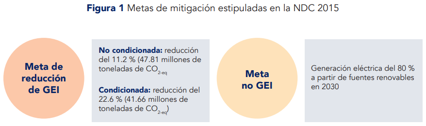
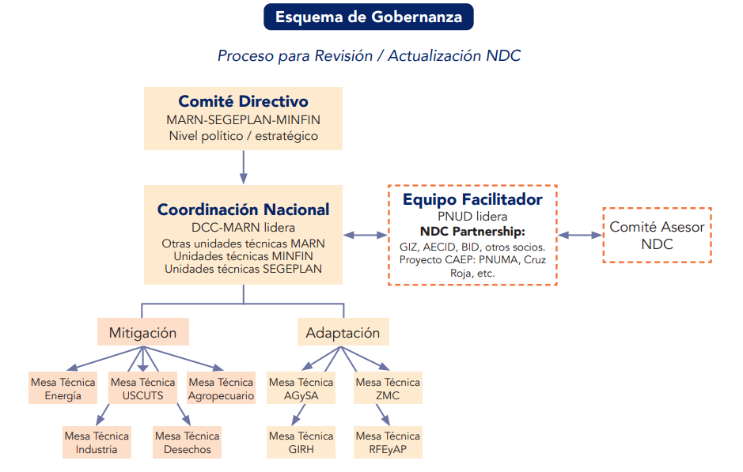
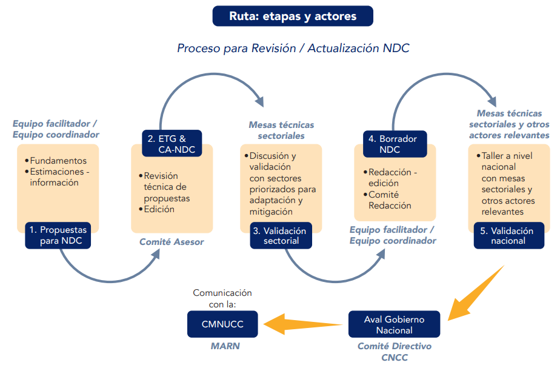
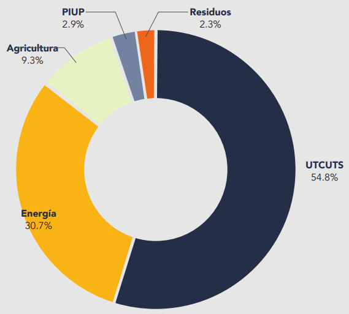
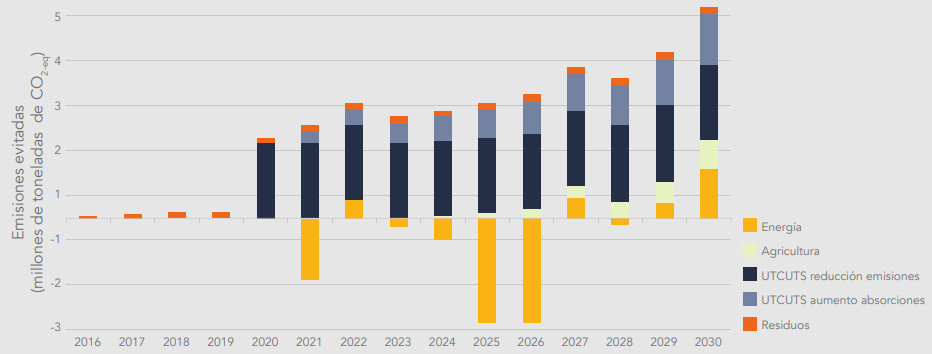
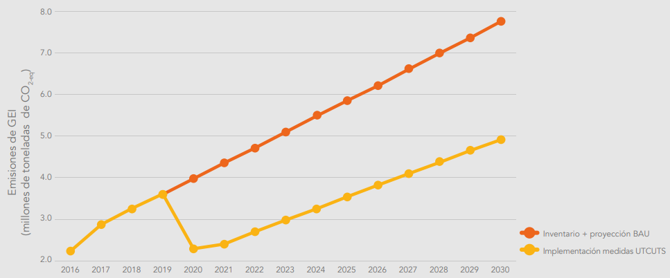
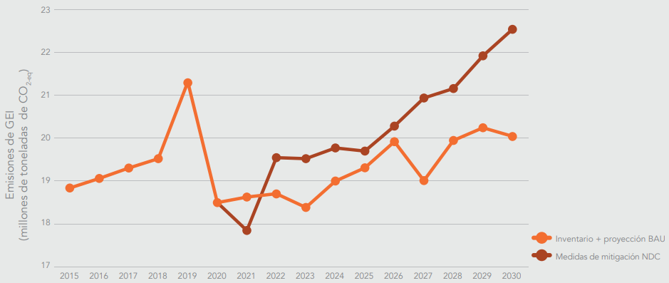
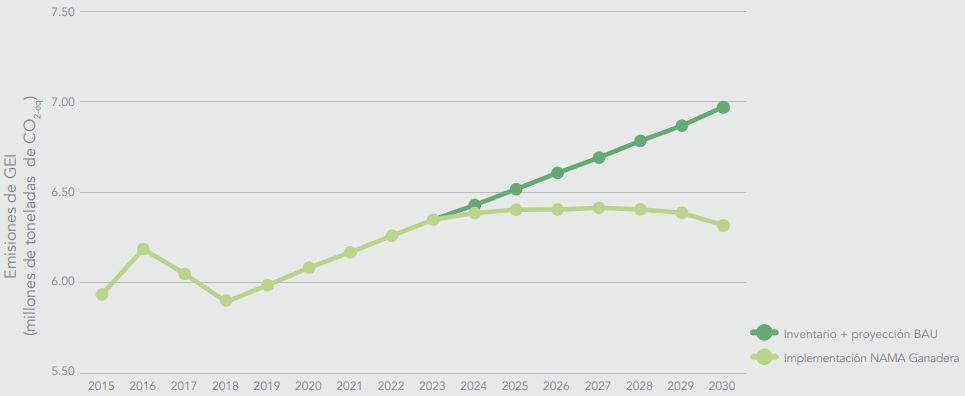
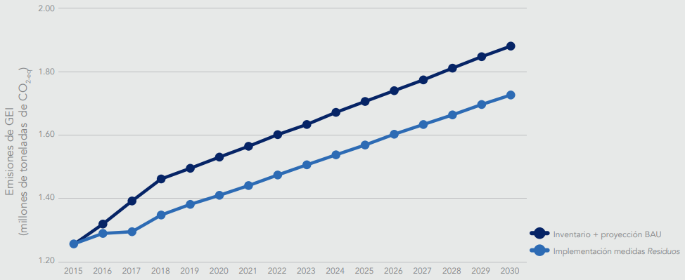

CONTRIBUTION NATIONALLY
DETERMINED GUATEMALA 2021
Mario Roberto Rojas Espino
Minister of Environment and Natural Resources
MINISTRY OF ENVIRONMENT AND NATURAL RESOURCES
The Government of Guatemala is pleased to present the Update of the Nationally Determined Contribution (CND, NDC) of Guatemala 2021, before the United Nations Framework Convention on Climate Change (UNFCCC), in the which reaffirms the commitment assumed in the Paris Agreement.
Guatemala is a multiethnic, multicultural, multilingual and megadiverse country, with a great wealth of natural resources and ecosystem services, essential for the global biological balance, which safeguards vast traditional and ancestral knowledge of indigenous peoples. The country has a Guatemalan System of Protected Areas (SIGAP) which represents 33% of the national territory. Being a country that contributes a very low percentage of emissions globally, it is one of the countries most vulnerable to the effects of climate change worldwide, it has directed its efforts focusing mainly on updating its Nationally Determined Contribution, referring to all those actions that contribute to strengthening resilience, improving adaptation capacity and contributing to the reduction of greenhouse gas emissions to reduce the adverse impacts of climate change.
Guatemala committed to promoting sustainable development with low emissions and minimizing threats related to climate change in accordance with its common but differentiated responsibilities, working based on national capacities to comply with the commitments contemplated in the National Plan for K'atun Development: our Guatemala 2032 and the National Development Priorities and the Sustainable Development Goals (SDG).
The National Council on Climate Change, established in Article 8 of the "Framework Law to regulate the reduction of Vulnerability, Mandatory Adaptation to the effects of climate change and Mitigation of greenhouse gases", Decree 7-2013 of the Congress of the Republic, approved the CND document, becoming an instrument of national priority in terms of compliance to make the necessary efforts in order to achieve the defined goals, nationally and internationally.
This Guatemala 2021 CND Update ratifies the country's commitment to reduce greenhouse gas emissions through the implementation of climate change adaptation and mitigation actions, in addition to complying with the commitments assumed under the United Nations Framework Convention on Climate Change.
In the exercise of my duties, it is an honor to present to the United Nations Framework Convention on Climate Change, on behalf of the Government of Guatemala through the Ministry of Environment and Natural Resources, the Guatemala CND Update 2021.
Fredy Antonio Chiroy Barreno
Vice Minister of Natural Resources and Climate Change
MINISTRY OF ENVIRONMENT AND NATURAL RESOURCES
Climate change is one of the main threats facing humanity today, a threat that is related to global greenhouse gas emissions and the vulnerability conditions of each country.
The Ministry of the Environment and Natural Resources, as the governing body for environmental issues and Focal Point before the United Nations Framework Convention on Climate Change, proposes inclusive and reactivation strategies through the creation of sustainable models for development, which they will allow the implementation of plans and strategies to face the adverse effects of climate change and focus efforts to increase adaptive capacity, vulnerability; and reduce GHG emissions, which allow the country to comply with national legal frameworks and international commitments.
In Guatemala, aware of maintaining the commitment in the fight against climate change, being a matter of national priority, the process of the Update of the CND of Guatemala 2021 was carried out, under the leadership of the Minister of Environment and Natural Resources, Mario Roberto Rojas Espino and with the participation of government organizations, local governments, the private sector, academia, indigenous peoples, civil society and international cooperation, making it a participatory, inclusive and transparent process.
The Guatemala 2021 CND Update document was prepared under methodological parameters in accordance with the update of the Greenhouse Gas Inventories presented in the "First Biennial Update Report and the Third National Communication on Climate Change" with information of emissions, from the year 1990-2018, considering the guidelines of the year 2006 of the Intergovernmental Panel on Climate Change and the Reinforced Transparency Framework of the Paris Agreement, allowing the definition of goals under quality guidelines and statistical projection of the mitigation sectors; obtaining as a result goals with a greater degree of transparency in relation to the CDN of 2015.
The Guatemala 2021 CDN Update considers 34 goals for the Adaptation component in the sectors of: Agriculture and food security; Marine-coastal zones; Forest resources, ecosystems and protected areas; Integrated management of water resources; Human health; and Infrastructure; and 10 goals for the Mitigation component in the sectors: Land use, land use change and forestry; Energy; Agriculture; and Waste. The sectoral goals have institutional managers for implementation, and with the support and monitoring of the Ministry of Environment and Natural Resources as the national focal point.
Based on the foregoing, regulatory frameworks will play a fundamental role for efficient planning and monitoring, reporting and verification at all levels and sectors, which will make it possible to promote actions that contribute to low-carbon development, the reduction of vulnerability and the improvement of adaptation practices to improve the living conditions of the Guatemalan population.
The CND Update will allow the creation of synergies and strategic alliances between the public-private sector and all the actors of society in order to implement responses and action plans, which involve allies to comply with national and international commitments.
Ciriac Antonio Urrutia Lemus
Climate Change Director
MINISTRY OF ENVIRONMENT AND NATURAL RESOURCES
Guatemala, as a member country and active within the United Nations Framework Convention on Climate Change (UNFCCC), is aware of the commitments that must be assumed to fight against the effects of climate change. In its role as Guatemala's focal point before the UNFCCC, the Ministry of Environment and Natural Resources (MARN) has made significant progress in institutionalizing actions at the national level.
Guatemala has made important contributions through the generation of a series of legal, technical and governance instruments strengthened at the national level. Examples of this are mentioned: the National Climate Change Policy (PNCC), Framework Law to regulate the reduction of Vulnerability, Mandatory Adaptation to the effects of climate change and Mitigation of greenhouse gases, Decree 7-2013, the National Climate Change Action Plan (PANCC), the National Low Emissions Development Strategy (ENDBE), Environmental Education Law, Decree 38-210 and the National Environmental Education Policy of Guatemala, duly aligned with the National Climate Change Plan. Development: K'atun Nuestra Guatemala 2032, with the Sustainable Development Goals and the General Government Policy 2020-2024.
Under the leadership and coordination of the Ministry of Environment and Natural Resources, the process of updating the CND of Guatemala 2021 was carried out, mainly in the establishment of the themes of Adaptation, Mitigation and Metrics; as well as inter-institutional strengthening; being carried out for the first time, as a multisectoral participatory national process.
The Nationally Determined Contribution of Guatemala 2021 joins the global efforts to contribute to the reduction of GHG emissions. In this sense, the country promised to reduce with its own resources, 11.2%; and with the technical and financial support of the international community, up to 22.6% of its total GHG emissions projected to the year 2030, with respect to the base year 2016, the year in which the national GHG inventories were updated and reported in the Third National Communication on Climate Change.
Consequently, the CND Implementation Plan is being prepared, with the purpose of identifying sources of financing and reaching consensus with the different sectors to specify the new goals and the implementation of the different public policy instruments that contribute to increase climate ambition.
Because of the above, it is important to highlight the efforts that the Ministry of Environment and Natural Resources is making to achieve this goal, among which the creation of databases, indicators and goals stands out to consolidate the Monitoring, Evaluation and Reporting (MER) for the Adaptation sectors and Monitoring, Reporting and Verification (MRV) for the Mitigation sectors. These efforts will make it possible to strengthen the reinforced transparency framework embedded in the reports to be submitted to the UNFCCC, such as the Biennial Transparency Report (BTR), the National Adaptation Communication, the Financing Reports and the CND Implementation Progress Reports, among others.
Alejandro Eduardo Giammattei Falla
President of the Republic of Guatemala
Mario Roberto Rojas Espino
Minister of Environment and Natural Resources
Leading institutions in each sector during the NDC update process
Adaptation to climate change
Ministry of Environment and Natural Resources (marine-coastal zones, Integrated Management of water resources); Ministry of Agriculture, Livestock and Food (Agriculture, Livestock and Food Security, Integrated Management of Water Resources); National Institute of Forests, National Council of Protected Areas (Forest Resources, Ecosystems and Protected Areas; Integrated management of water resources); Ministry of Public Health and Social Assistance (Human Health); Ministry of Communications, Infrastructure and Housing, Secretary of Planning and Programming of the Presidency (Infrastructure); Ministry of Food and Nutrition Security (Agriculture, Livestock and Food Security)
Climate change mitigation
Ministry of Environment and Natural Resources (Waste and Industrial Processes); National Institute of Forests, National Council of Protected Areas (Land use, land use change and forestry); Ministry of Energy and Mines (Energy); Ministry of Agriculture, Livestock and Food (Agriculture).
The preparation of the updated NDC had the technical and financial support of: United Nations Development Program (UNDP), the German International Cooperation (GIZ), the Inter-American Development Bank (IDB) and the World Resources Institute (WRI).
This document was reproduced thanks to the financial contribution of the United Nations Environment Program (UNEP) through the Project Increasing the Ambition of Nationally Determined Contributions and Climate Finance in Central America and the Caribbean NDC-5.
This document was prepared by the Ministry of Environment and Natural Resources, coordinated by the Vice Ministry of Natural Resources and Climate Change through the Climate Change Directorate, with the technical support of the Departments of: Adaptation and Vulnerability, Science and Metrics and Mitigation; where technical personnel mainly participated, with the accompaniment of consultants provided by the Cooperation, through the CAEP Project. The NDC was presented to the National Council on Climate Change, who approved it at a meeting on February 28, 2022.
MARN 2022. NDC update. Guatemala City.
Guatemala, being a country highly vulnerable to the impacts of climate change, has directed its efforts to focus mainly on updating its Nationally Determined Contribution (NDC) referring to all those actions that contribute to strengthening the resilience, improve adaptive capacity and contribute to reducing greenhouse gas emissions to face the adverse effects of climate change.
Guatemala is ranked among the first places in vulnerability worldwide by different organizations that analyze this factor. The high-risk situation in which the country finds itself responds both to its location and environmental factors, as well as to socioeconomic conditions. In this sense, an important indicator is the Human Development Index, for which Guatemala ranks 126 out of 189 countries (data from 2019). Likewise, the different vulnerabilities to which the Guatemalan population is exposed and the increase in threats as a consequence of climate change increase the risk of suffering floods, landslides and droughts that directly limit the living conditions of people and the development of the country.
Changes in the main climatic variables have already been perceived in the country. For example, an increase of 0.8 °C was detected in the average temperature of the last 20 years. For its part, an average increase in annual precipitation of 122 mm was estimated, although it should be noted that this is distributed erratically, with an increase in the frequency and intensity of rain on some days, and longer periods without rain.
Unfortunately, changes in climate variability are expected to continue. Climate scenarios for the end of the century project an increase in temperature between 1ºC and 4ºC, and a reduction in annual precipitation between 500 mm and 1100 mm; with which relevant changes are foreseen for the national territory.
It is estimated that around three quarters of the country's population lives in areas exposed to climatic threats (floods, droughts and landslides). As a consequence, a considerable increase in economic losses related to extreme hydrometeorological events has been observed: in the last decade (2010-2019) losses of USD 1,320.1 million were reported, compared to USD 147.8 million reported in the 1940s. In the future, the economic impact is expected to represent between 2.13% and 63.63% of the gross domestic product. The sectors of Agriculture, livestock and food security; and Infrastructure are the most affected by the impacts of climate change, in addition to water resources and biological diversity.
In this sense, Guatemala is preparing to reduce its vulnerability and continue with global efforts to reduce greenhouse gas (GHG) emissions, which cause climate change. In the first place, and unlike 2015, the country has better information on its situation in the face of climate change, both in terms of adaptation and in relation to its progress in mitigation. Institutional arrangements, the regulatory framework, policies, methodologies validated by the United Nations Framework Convention on Climate Change (UNFCCC), and planning to address climate change have also been strengthened. From this account and in compliance with the requirements of the UNFCCC, Guatemala has ratified its commitment through the update of its NDC.
In the updating process, the country's development goals and vision were harmonized, taking the K'atun National Development Plan as a reference: our Guatemala 2032; the National Development Priorities, which corresponds to an exercise to harmonize the SDGs; the National Action Plan for Climate Change (PANCC) and the National Strategy for Development with Low Emissions of Greenhouse Gases. In addition, sectoral planning instruments linked to climate change were used.
The governance scheme for the NDC update included work and decision structures, at three levels:
Sectoral Roundtables: They were made up of representatives of the institutions of each sector, including the government, academia, among others, and they served as the basis for discussion and technical validation of the proposed goals and objectives. measures1.
Coordinating committee and facilitating team: led by the Climate Change Directorate of the Ministry of Environment and Natural Resources (MARN) with the strategic support of other MARN agencies, as well as the Planning Secretariat and Programming of the Presidency (SEGEPLAN), of the Ministry of Public Finance (MINFIN) and the external technical team that collaborated in the development of the update process and in the preparation of this NDC document.
Steering Committee: with a role of strategic direction and political support for the process. This was led by the Vice Ministry of Natural Resources and Climate Change of MARN and accompanied by the Undersecretary of Strategic Development Analysis of SEGEPLAN and the Vice Minister of Revenue and Fiscal Evaluation of MINFIN.
The NDC update process was planned in seven stages: 1) proposal approach; 2) review by government technical teams and the NDC advisory committee; 3) sectoral validation; 4) preparation of the draft of the updated NDC; 5) national validation through a socialization and feedback workshop; 6) approval by the National Council on Climate Change (CNCC); and 7) submission to the UNFCCC.
The updated NDC has an adaptation component that includes six sectors, in accordance with those addressed in the PANCC: 1) Marine-coastal zones, 2) Agriculture, livestock and food security, 3) Forest resources, ecosystems and areas protected areas, 4) Integrated management of water resources, 5) Human health, and 6) Infrastructure.
For the first four, specific adaptation goals were formulated based on national development planning and the PANCC. These instruments were discussed and validated with governing bodies of each sector, as well as other relevant actors. In the case of the Human Health and Infrastructure sectors, only work routes were proposed to strengthen the capacities of the entities related to the subject, as well as to strengthen coordination between said entities and the MARN, since to date there is no information or history of sectoral linkage with the issue of climate change that would allow the establishment of goals and responsible parties. These routes were built in a participatory manner with the contribution of representatives of the sector governing body and relevant stakeholders identified in the process (Table 1).
For its part, the percentage mitigation goal stipulated in the NDC formulated in 2015 is maintained, with the commitment to reduce 11.2% of projected emissions by 20302 This goal was maintained, given the national context: a) by updating the GHG inventories, which established a new baseline; b) the low contribution of Guatemala's GHG emissions; c) economic and social circumstances of the country derived from the COVID-19 pandemic; and d) limited access to international funds to meet climate change goals.
Nevertheless, Guatemala is committed to complying with the acquired international commitments, which is why measures were proposed for four of the emitting sectors: 1) Land use, land use change and forestry (LULUCF) ; 2) Energy; 3) Agriculture; and 4) Waste. In this NDC update, no measures from the Industrial Processes and Product Use sector were included, since for the moment no feasible measures to be implemented within the target period were identified. However, in the Biennial Update Reports it is proposed to communicate on the implementation of voluntary actions to reduce or mitigate emissions from this sector.
It is important to emphasize that the measures to achieve this reduction goal will be expanded. To achieve this, the MARN and the sectoral institutions will continue the work to establish other options of the National Strategy for Development with Low Emissions of Greenhouse Gases that can be implemented in the period stipulated for this NDC, as well as to achieve the goal conditioned to the Obtaining external support, which was established at 22.6% of the emissions projected for 2030 (Table 1).
In updating the NDC, cross-cutting issues of gender, indigenous peoples and local communities have been taken into account; and financing for the implementation of the NDC. The inclusion of gender and indigenous peoples considerations in the corresponding goals and measures was promoted, mainly in those of the adaptation component. To this end, institutional gender representatives and the Indigenous Roundtable on Climate Change participated, who reviewed and provided contributions to improve the proposals.
Component |
Industry |
Goal |
|
ADAPTATION |
Agriculture, livestock and food security |
AGS-1 Soil conservation AGS-2 Reduction of chronic malnutrition AGS-3 Climate information access system AGS-4 Irrigation systems AGS-5 Sustainable Livestock Practices AGS-6 Project proposal that addresses the issue of sustainable livestock farming |
|
Marine-coastal areas |
ZMC-1 Reforestation of mangrove ecosystems ZMC-2 Shark fisheries management ZMC-3.1 Technical studies of new protected areas in the marine-coastal zone MC-3.2 Incorporation of protected areas into SIGAP in the marine-coastal zone ZMC-4 Reef Health Index |
|
|
Forest resources, ecosystems and protected areas |
REA-1 Forest cover REA-2 Degradation by forest fires REA-3.1 Forest restoration REA-3.2 Agroforestry systems REA-4 Ecosystem-based Adaptation |
|
|
Integrated management of water resources |
GRH-1 Programs for the integrated management of water resources GRH-2 Plans for the protection of the area and for sustainable management GRH-3 Guide to measure quality and flow GRH-4 Riparian forests GRH-5 National early warning system |
|
|
Human health |
There are no defined goals, but a roadmap |
|
|
Infrastructure |
There are no defined goals, but a roadmap |
|
Component |
Industry |
Goal |
|
|
MITIGATION |
Land use, land-use change, and forestry |
Goal not conditional on international support: By 2030, GHG emissions have been reduced by 11.2% compared to the baseline scenario, which entails reducing 65 million tons of CO2-eq Goal conditional on international support: By 2030, GHG emissions have been reduced by 22.6% compared to the baseline scenario, which entails reducing 56.6 million tons of CO2-eq |
UTC-1 Conservation, protection and sustainable management of forests UTC-2 Reduction of forest degradation through fire prevention and control UTC-3 Establishment of forest plantations UTC-4 Restoration of degraded areas |
|
Energy |
ENE-1 Prioritize clean energy for electric power generation ENE-2 Sustainable mobility (electromobility and biofuels) ENE-3 Change in the energy matrix |
||
|
Agriculture |
AGR-1 National strategy for sustainable cattle farming with low emissions |
||
|
Waste |
RES-1 Capture of methane in the landfill of zone 3 and its use for the generation of electrical energy RES-2 Clean field project |
As a first follow-up task and to guarantee the achievement of the proposed goals, an analysis of costs and financial gaps is being carried out. In addition, an implementation path has been planned. These inputs are expected to be developed during 2022.
In the case of the adaptation component of the updated NDC, sectoral validation was carried out through two rounds of workshops with relevant stakeholders identified together with MARN and the governing body of each prioritized sector. In the case of the mitigation component, a round of workshops was held for three mitigation sectors: a) Land use, land use change and forestry (LULUCF); b) Agriculture; and c) Waste. The Energy sector defined its goals and measures directly from the Ministry of Energy and Mines (MEM), as the governing body on the subject, with the support of MARN. In addition, a space for dialogue was opened and three working meetings were held with the private sector to see how the climate change adaptation and mitigation actions that are implemented and that they can contribute to the NDC goals in the different sectors , can be reported; It was agreed to continue the dialogue to establish voluntary agreements with the interested parties.
1.1 Context on global commitments around climate action
Nationally Determined Contributions (NDCs) are the main instrument derived from the Paris Agreement. In them, the commitments that each country assumes to contribute to the achievement of the objectives of the United Nations Framework Convention on Climate Change (UNFCCC) are stated. These commitments include the goals of reducing greenhouse gas (GHG) emissions and those linked to improving adaptation to climate change (UNFCCC, s/f). Likewise, the obligations with respect to human rights, indigenous peoples, local communities, gender and women's empowerment, people in any situation of vulnerability, the right to development and intergenerational equity must be respected, promoted and taken into consideration ( UN , 2015).
It also highlights, within the commitments, the principle established in Article 3 of the text of the UNFCCC (1992) which establishes that:
Parties have the right to sustainable development and should promote it. Policies and measures to protect the climate system against human-induced change should be appropriate to the specific conditions of each Party and be integrated into national development programmes, taking into account that economic growth is essential for the adoption of measures to deal with climate change.
And what is established in Article 4 which indicates that, in order to meet the commitments, the Parties must take into account their common but differentiated responsibilities and the specific nature of their national and regional development priorities, their objectives and their circumstances
To facilitate a framework of guidelines to operationalize NDCs, the Katowice Climate Package was adopted. It contains detailed guidance on how NDCs should be presented and how to follow up on efforts to improve national adaptation capacities. In addition, it promotes international cooperation and encourages the parties to increase the ambition of their future climate measures (UNFCCC, 2018).
1.2 Situation of Guatemala in the context of climate change
The most recent GHG inventory (2018) prepared for the project «First Biennial Report and Third National Communication on Climate Change showed that total emissions3 were 63.55 million tons of CO2-eq. With this, it is evident that Guatemala's contribution to global GHG emissions is very low, with only 0.08%4, although it is important to emphasize that the trend is increasing.
Despite its low contribution in emissions, Guatemala is a country highly vulnerable to the impacts of climate change. The analyzes compiled for the Third National Communication on Climate Change of Guatemala (MARN et al., 2021) showed increases in the average temperature of 0.8 °C in the comparison period (2001-2019) with respect to the reference period (1973- 1999). The most abrupt changes are observed during February, July, August and September. For its part, the annual rainfall regime has also shown an increase (122 mm). However, it is important to highlight that this is not distributed uniformly, but is concentrated in short periods of the year, causing the soils to present saturation conditions. In turn, the periods of absence of rain have increased, perceiving the inverse effect, that is, a greater number of droughts.
According to the climate scenarios for Guatemala, these effects could worsen in the coming decades. For example, the most conservative scenario indicates increases in the average temperature of the country of 1 °C and reductions of 500 mm in annual precipitation by the end of the century. For its part, the most abrupt scenario foresees increases of up to 4 °C and reductions of up to 1100 mm. In general, a general decrease in precipitation at the national level is expected, but with more intense rains in shorter periods and in specific areas (MARN et al., 2021).
These changes in climatic conditions have a series of consequences and impacts for the country. Around 75% of the population is exposed to climatic threats such as floods, droughts and landslides. With this, livelihoods and economic activities are also affected (MARN et al., 2021). For this reason, in 2014 the country ranked fourth in the exposure index of the Latin American region (Mapplecroft, 2014).
Evidence of the increase in climate threats is reflected in the economic losses due to extreme events such as droughts and cyclonic events, which are increasingly frequent in the country. In the 1940s, losses of USD 147.8 million were estimated, compared to USD 1,320.1 million reported during the period 2010-2019, that is, its value increased almost twelve times5 . According to the evaluation carried out by the Secretariat of Planning and Programming of the Presidency (SEGEPLAN), the damages, losses and additional costs caused by the tropical depressions Eta and Iota that occurred in the country during the year 2020, amount to approximately Q6,002,035,633. (USD 775.5 million).
It is estimated that the cumulative cost of the impact of climate change will be especially severe for the agricultural and infrastructure sectors, although it also greatly affects water resources and biological diversity. In this sense, the economic impact is expected to represent between 2.13% and 63.63% of the gross domestic product (GDP)6, depending on the climate scenario and period analyzed (MARN & SEGEPLAN, 2021).
Based on the indicators of the global climate risk index for the period 2000-2019, Guatemala was ranked 16 out of 180 (Eckstein et al., 2021). At the Mesoamerican level, the country is located in the first position of vulnerability (Mapplecroft, 2014). This condition not only responds to their location and environmental factors, but is determined, to a large extent, by their socioeconomic vulnerability. For example, Guatemala has one of the lowest Human Development Indices (HDI) in the world, in the 2020 report with data from 2019, it was ranked 127 out of 189 countries (UNDP, 2020). The HDI mainly measures three dimensions of development: life expectancy at birth, educational level, and the average income of the population (National Human Development Report, s/f).
These socioeconomic vulnerabilities of the population are being exacerbated by climate change, so that living conditions and productive activities in the country such as agriculture, water supply and hydroelectricity generation. There are also effects on health and an increase in migration due to climatic causes (MARN et al., 2021). Finally, there are losses in biological diversity that have not yet been quantified, which makes it more difficult to plan measures to prevent its deterioration.
In conclusion, as the effects of climate change worsen, the risk increases and the social and economic development of the Guatemalan population is impaired. This situation is exacerbated in the indigenous population, since their productive, social, cultural and economic practices are highly affected (MARN et al., 2021).
1.3 Country vision regarding climate change
As described in section 1.2, the natural characteristics and socioeconomic situation of the country are factors that determine its high risk in the face of climate change. This is manifested in strong environmental and economic impacts, damage to infrastructure and loss of human life, as well as effects on the health and well-being of the population as economic options and the provision of basic services are limited. For this reason, adaptation has become a priority for Guatemala over mitigation, given its low contribution to global emissions, as shown below.
Given that the effects of climate change have a greater impact on women, children and indigenous peoples (MARN et al., 2021), it is of great importance for the country that climate action focuses on reducing risk in the most vulnerable populations. In this sense, Guatemala recognizes the fundamental principles and guarantees of the Convention established in the Paris Agreement, particularly those related to the social sphere: equity, rights of indigenous peoples, local communities, migrants, children, people in vulnerable situations, and empowerment. of women (Government of the Republic of Guatemala, 2021).
To carry out the necessary adaptation efforts, a significant investment is required both with national resources, as well as with the support of international funds and climate financing mechanisms. These resources would allow more concrete interventions and the implementation of the measures proposed in national policies (CNCC, 2021). For this reason, Guatemala has requested the UNFCCC to be recognized as a highly vulnerable country, so that it can have better access to specific support for adaptation offered to countries in this category (Government of the Republic of Guatemala, 2021).
Taking into account its context and needs, in its participation in the Conference of the Parties (COP) number 26, Guatemala identified nine strategic axes for addressing climate change: 1) financing, 2) adaptation, 3) loss and damage, 4) participation in the Santiago Network; 5) mitigation; 6) transparency, 7) technology transfer and capacity building, 8) indigenous peoples and local communities, and 9) gender.
Although adaptation has been taken as a priority, Guatemala is consistent with the commitments to stabilize global GHG emissions acquired with the Paris Agreement. Therefore, it makes mitigation efforts, taking into account the principle of common responsibilities, but differentiated based on their national circumstances.
As a result, the country has several planning and legal instruments, many of which are in the implementation phase. Among these, the National Action Plan for Climate Change (PANCC) and the National Strategy for Development with Low Emissions of Greenhouse Gases stand out. Both documents have served as the basis for updating the adaptation and mitigation goals proposed by Guatemala in its NDC.
Likewise, the updated NDC took as a reference the K'atun National Development Plan: our Guatemala 2032. This summarizes the National Development Agenda in five axes and 10 priorities, which are broken down into goals, results, and guidelines. One of the most relevant axes for the formulation of the NDC was that of "Natural resources today and for the future", since it directly raises priorities and goals related to climate change, but is also linked to the priorities of other axes (CONADUR, 2014).
The updated NDC proposes an integrated approach in which special emphasis is placed on adaptation to climate change. However, this component is not seen as an isolated issue, but rather those goals that also make it possible to potentiate mitigation measures have been prioritized and, therefore, there are synergies between both components. For its part, it was sought that most of the mitigation measures provide co-benefits that contribute to rural development, improve food security, disaster risk management, job creation and just transition.
Finally, the updated NDC has been based on equity, defined as the guiding principle of the K'atun National Development Plan: our Guatemala 2032, which indicates that the incorporation of notions of sustainability and resilience is done in social terms, economic and environmental, within a framework of promoting social equity, respect for multiculturalism and the defense of human rights (CONADUR, 2014). Based on this, the goals and measures proposed in the NDC focus on promoting equity between men and women of all ages, ethnic groups, and socioeconomic conditions.
These principles and comprehensive vision embodied in the NDC seek to foster the development of the country in a sustainable manner. In addition, they are highly relevant for Guatemala since they are harmonized with other international commitments to which the country has joined, such as: the 2030 Agenda; Sendai Framework on Disaster Risk; Convention on Biological Diversity and its Post-2020 Strategic Framework for Biological Diversity; the United Nations Convention to Combat Desertification; among others.
1.4 National regulatory and political framework in relation to the NDC
Despite the risk conditions faced by climate change under which Guatemala finds itself, the country has committed itself, from a very early stage, to contributing to mitigation and adaptation. In this sense, progress has been made in the political and planning framework for addressing climate change (MARN et al., 2021). One of the most relevant was the ratification of the Paris Agreement (Decree 48-2016, 2016), which was submitted to the UNFCCC on February 24, 2017, making the INDC a commitment acquired by Guatemala at the international level. A few years later, the process of updating the NDC began, which articulated some of these policy instruments that are related to the proposed goals, as clarified below (MARN et al., 2021).
To define the goals, Guatemala relied on instruments such as the K'atun National Development Plan: our Guatemala 2032 (CONADUR, 2014), the Sustainable Development Goals (SDGs), the National Climate Change Policy (MARN, 2009a), the Framework Law to Regulate the Reduction of Vulnerability, Mandatory Adaptation to the Effects of Climate Change and the Mitigation of Greenhouse Gases (Decree 7-2013, 2013 or framework law on climate change), the PANCC (CNCC , 2018), the National Strategy for Development with Low Emissions of Greenhouse Gases (Government of the Republic of Guatemala, 2018a), the National Strategy for the Reduction of Deforestation and Forest Degradation in Guatemala (GCI, 2018a) and the National REDD+ Strategy (GCI, 2020). The country has also taken into consideration instruments such as the Institutional Strategic Plans that were available according to the sectors directly linked to climate change.
In addition, instruments have been used regarding the incorporation of the gender issue linked to climate change, such as: the Environmental Gender Policy (MARN, 2015), the Agenda for climate change management, comprehensive risk management and capacity building with a focus on equity and equality between men and women (MARN & SEPREM, 2018), the Strategy to Incorporate Gender Considerations in Climate Change in Support of the Nationally Determined Contribution (MARN, 2020), the Manual for the inclusion of gender considerations in the activities and projects of the Green Climate Fund (MARN, 2018a), among others. These instruments are an example of the efforts that have been carried out to highlight the gender issue in the approach to climate change, and through them, promote the full and effective participation of women in programs, projects and policies on adaptation and climate change mitigation (MARN et al., 2021).
1.5 Institutional arrangements to address climate change
In relation to the institutional framework, in Guatemala there are various instances that are linked to the generation of public policies and their management for decision-making related to climate change. The Ministry of the Environment and Natural Resources (MARN) is the lead entity designated for the issue of climate change and is also the country's political and technical focal point before the UNFCCC. Some government entities such as the National Institute of Forests (INAB), the National Council of Protected Areas (CONAP) and the Ministry of Agriculture, Livestock and Food (MAGA), have specific units dedicated to addressing climate change and agendas or strategic plans institutions related to the subject. Although climate change has been incorporated into various institutions that recognize the need to integrate the issue into their operations, it is necessary to continue with this effort and add to other instances that are closely linked to the issue, such as the Ministry of Communications, Infrastructure and Housing (CIV) or the Ministry of Public Health and Social Assistance (MSPAS) to include specific teams (for example units or directorates) to address adaptation to climate change.
As progress has been made in the formulation of public policies and legal instruments, spaces for inter-institutional coordination have also been created, the most relevant being the National Council on Climate Change (CNCC), which constitutes a platform that includes multiple sectors of the country at the highest level. Its function is the regulation, supervision of the implementation of actions and resolution of conflicts related to Decree 7-2013 of the Congress of the Republic (Article 8). In addition, they highlight the Inter-Institutional Coordination Group (GCI)7, the Indigenous Roundtable on Climate Change of Guatemala (MICCG) and the Guatemalan System of Climate Change Sciences (SGCCC)8, among others
Regarding the participation, advocacy and decision-making of indigenous peoples, the MICCG represents an example of a high political level, since it is part of the CNCC. This entity also participates in the platform of indigenous peoples and local communities of the UNFCCC.
In addition, mechanisms have been created to promote progress in meeting the country's goals, such as the National System of Information on Climate Change (SNICC, Decree 7-2013) and the National System of GHG Inventories of Guatemala (SNIGT), the latter is in the consolidation phase. Both the SNICC and the SNIGT subsystem represent the main mechanisms for reporting to the UNFCCC. In this sense, there are recent advances in the institutional arrangements to strengthen these systems, such as the creation of sectoral adaptation and mitigation roundtables.
2.1 Guatemala's first NDC
Guatemala, like many other countries, submitted its Intended and Nationally Determined Contribution (INDC) in 2015 (Government of the Republic of Guatemala, 2015). This instrument became the NDC when the Paris Agreement was ratified by the Congress of the Republic of Guatemala. For the approach of the commitments, ambitious goals were proposed to reduce the country's emissions by 2030, despite the fact that the data available at that time indicated that Guatemala contributed less than 0.08% of global emissions (Government of the Republic of Guatemala , 2015).
The established mitigation goals are national in coverage and focus on reducing the three main GHG emissions: carbon dioxide (CO2), methane (CH4) and nitrous oxide (N2O). The sectors that were identified as emitters were Energy, LULUCF, Agriculture, Waste9 and Industrial processes. Figure 1 summarizes the goals, taking into account the country's own resources (unconditional goal) and with the support of international cooperation (conditional).

Adapted from the Government of the Republic of Guatemala (2015).
In addition to the mitigation goals, it was identified that the development of a component for adaptation was highly relevant. For this, the goal of reducing vulnerability across the board and promoting the improvement of adaptation processes in key sectors was established (Government of the Republic of Guatemala, 2015):
Human health,
Marine-coastal areas,
Agriculture, livestock and food security,
Forest resources, protected areas;
Conservation and management of strategic ecosystems,
Infrastructure,
Integrated management of water resources,
Quality of productive infrastructure,
Soil protection and
Comprehensive disaster risk reduction management
Although the 2015 NDC proposes mitigation goals, and another very general one for adaptation where the related sectors are listed, these do not specify the measures that will be implemented to achieve them or describe the protocols for monitoring and evaluation. During the development of the update, it was proposed to improve these issues through a consultation process and a more specific methodological process, which is presented below.
2.2 NDC update process and progress in its implementation
To give greater clarity to the goals, the first step that was carried out for the formulation of the updated NDC was a review of the information available on the status of implementation of the mitigation and adaptation measures related to the goals set out in the NDC of 2015. This process involved consultation with different actors linked to the identified measures.
Another important step was the generation of information that would serve as input for updating the NDC. In this sense, the national GHG inventories were updated, which serve as the basis for emission projections and evaluation of mitigation options to achieve the proposed goals. These inventories were published in the Third National Communication on Climate Change of Guatemala (3CNCC) (MARN et al., 2021)10 and the First Biennial Update Report of Guatemala (1IBA)11. In addition to the inventories, the inputs offered in the National Development Strategy with Low Greenhouse Gas Emissions (Government of the Republic of Guatemala, 2018a) were used, which served as a starting point for prioritizing mitigation options.
In the case of the adaptation component, an exercise was carried out to prioritize the sectors based on the 2015 NDC and the PANCC; as well as inputs from the analysis and prioritization of sectors and adaptation measures, carried out by IUCN and the World Bank in view of updating the NDC (World Bank et al., 2020). After reviewing this documentation, the sectors that were included in the update were agreed upon.
This NDC review and update process began in November 2020, for which a work path was defined. This process had the support of donors and the committed participation of the governing institutions of the prioritized sectors. Then, the governance of the update process was established, forming a team for the coordination and development of the updated NDC document. This included dialogue and decision-making teams at three levels (figure 2):
Sectoral Roundtables: They are the basis for discussion and endorsement of proposed goals and measures. These are divided into adaptation and mitigation components and have the participation of the main government actors, civil society, indigenous peoples, the private sector, academia, among others. The roundtables have already figured in previous processes such as the updating of the PANCC, the design of the National Strategy for Development with Low Emissions of Greenhouse Gases, and the national GHG inventories.
Coordinating committee and facilitating team: coordination was led by MARN, through the Climate Change Directorate, but other MARN agencies and other government instances that have the rectory for the prioritized sectors, in addition to technical representatives of the Secretariat of Planning and Programming of the Presidency (SEGEPLAN) and the Ministry of Public Finance (MINFIN). For its part, the facilitating team corresponds to a technical group that developed the process of updating the NDC and the preparation of the resulting document. This was led by the United Nations Development Program (UNDP) and had direct collaboration from the German Agency for International Cooperation (GIZ, for its acronym in German), the Universidad del Valle de Guatemala (UVG) and Banco Inter-American Development Bank (IDB). In turn, it had the technical collaboration of other partners such as the United Nations Environment Program (UNEP) and the Red Cross, through the NDC Partnership. At this level, there was also the NDC Advisory Committee, made up of professionals with a recognized track record and extensive experience in climate change and related issues, who were invited by MARN to support the process ad honorem, providing technical inputs and political guidance. and strategic throughout the process.
Steering Committee: This was made up of the MARN Vice Ministry of Natural Resources and Climate Change as leader, the SEGEPLAN Undersecretary for Strategic Analysis of Development and the MINFIN Vice Ministry of Revenue and Fiscal Evaluation . His role was to provide strategic direction and political backing to the NDC update process. In this way, he was in charge of giving the endorsement at the highest level.

The work path for updating the NDC (technical process) consisted of five stages (some parallel), which were differentiated by the type of tasks that were carried out in each one and the actors involved (figure 3):
Presentation of proposals: this stage made up the identification and analysis of the available information that allowed the review and proposal of goals and measures.
Review by the government technical teams and the NDC advisory committee: the proposals put forward in the first stage were reviewed by both teams, which provided inputs to improve the proposals
Sectoral validation: the proposals for revised goals and measures were presented at the sectoral roundtables for review, feedback, and validation.

Draft NDC: With the information validated in the previous stage, the document that makes up the NDC update was written and consolidated, including the goals and proposed measures. This was revised again (item b).
National validation: the document refined thanks to the inputs of the technical teams and advisors was socialized and validated with actors at the national level, which included the technical tables, as well as relevant actors linked to climate change in Guatemala.
Due to the restrictions and precautionary measures due to the COVID-19 pandemic, the workshops and meetings during the process were through virtual platforms.
Once the technical process was exhausted, the validated document was transferred to MARN and the steering committee, who sought endorsement at the highest level: the Presidency of the Republic. In this process, the CNCC was also made known.
The circumstances of each country regarding climate change are determined by biophysical, social, political and economic conditions. These, for the most part, are linked to people and the way in which available resources are managed.
Guatemala is a country with a diversity of cultures that converge in its territory, where almost half of the population (43.6%) self-identifies as one of the three indigenous peoples: Maya, Xinca or Garífuna (INE, 2019). Aware of this and of respect for the human rights of all groups that make up society, the country has assumed commitments in this regard, being a signatory to the main instruments referring to human rights and indigenous peoples. As a consequence, it has formulated specific policy and regulatory instruments to implement some of these commitments.
For its part, in Guatemala there is an important challenge, since the indigenous peoples, rural population and women are in a situation of backwardness and exclusion. This situation is reflected in the rates of poverty and access to basic services, to mention a few examples (section 1.2).
For this reason, the NDC update process included considerations to ensure the effective participation of these groups in decision-making and in the distribution of benefits from climate action. For this, the main instruments of the legal and planning framework in this matter were taken as a basis and the participation of the people in charge of addressing these issues at the institutional level was promoted. From this account, in the formulation of goals and measures (mainly in the adaptation component) it was sought that the benefits of its implementation are equally accessible to the entire population. These issues are addressed in the fact sheets of adaptation goals and mitigation measures where applicable.
For its part, GHG reduction implies changes that offer opportunities, but also imply costs. These changes in the development model have consequences for livelihoods, employment opportunities and working conditions, which is why a just transition is required (ILO, 2018).
In order to achieve an effective implementation of the measures and actions identified in this NDC, it is necessary to be clear about the costs and the sources of financing that can be invested to cover them, in addition to identifying the necessary support to improve ambition. This analysis is part of the process of updating and improving the NDC.
The following describes how these cross-cutting issues have been broadly addressed during the update process.
3.1 Gender
To address gender considerations in the NDC update process, the Strategy to Incorporate Gender Considerations in Climate Change in Support of the Nationally Determined Contribution (MARN, 2020) was used as the main instrument.
Next, gender considerations relevant to the proposed goals and measures were identified. These were reviewed with representatives of the gender offices of the governing bodies to ensure three aspects: 1) that their approach is appropriate; 2) that the options proposed contribute to reducing the conditions of vulnerability of women in the face of climate change and 3) that women benefit from the implementation of said measures. The review process consisted of submitting the proposals electronically to receive comments and input, and a virtual meeting to discuss the measures and agree on the best way to reflect gender considerations.
3.2 Indigenous peoples and local communities
As for gender, climate change adaptation goals were formulated including considerations for vulnerable populations such as the indigenous population and local or rural communities. The proposed goals were reviewed and provided feedback in a meeting with the MICCG, considering that this is a representative platform of the indigenous peoples of Guatemala and linked to climate change.
3.3 Just transition
To follow up on the process of updating the NDC that will be presented in 2022, the International Labor Organization (ILO) and MARN will carry out an analysis of the proposed goals and measures to identify opportunities that ensure that the changes foreseen by their implementation are carried out within the framework of a just transition. In this way, it will be ensured that the working conditions, benefits and rights of workers are not limited as a consequence of implementing these measures.
3.4 Funding for NDC implementation
As a complement to the NDC update, an analysis of the costs and financing gaps is being carried out to implement adaptation and mitigation measures in compliance with the NDC goals.
This analysis will identify the funding needs for each measure and will also suggest available funding sources. This will be a very relevant input to establish the implementation path of the updated NDC.
The country already has some financial studies related to climate change, such as the Climate Finance Analysis in Guatemala (MARN, 2019)12 and three studies carried out by the Biodiversity Finance Initiative (BIOFIN) on public and private spending on climate change in Guatemala (UNDP, 2018a, 2018b). These inputs will serve as the basis for specific financing analysis for the updated NDC.
Given Guatemala's vulnerability to the impacts of climate change, adaptation is a priority component for the country. As mentioned in section 2.1, the adaptation goal established in the 2015 NDC is "the transversal reduction of vulnerability and improvement of adaptation processes in key sectors" (Government of the Republic of Guatemala, 2015, p. 8).
Given the generality of this goal and the fact that there was still no Monitoring, Evaluation and Reporting (MER) system, it was impossible to systematically determine progress in its implementation. However, it is recognized that an important advance to lay these foundations was the formulation of the PANCC (CNCC, 2016) and its update (CNCC, 2018). This instrument brings together proposals for measures and indicators focused on six sectors.
With the process of updating the NDC, the national ambition to achieve adaptation to climate change increased, for which measurable and reportable sector goals were developed. For each goal, the baseline was analyzed and the entities responsible for its implementation were designated. This is a significant advance as it allows for monitoring and transparency in the implementation and communication of progress.
Many of the adaptation measures included in the updated NDC targets will produce important benefits that, in addition to promoting resilience to climate change in the long term, will directly contribute to rural development, improved food security and risk management of disasters; and job creation and just transition. In turn, they have important synergies with mitigation, since they may contribute to reducing the country's GHG emissions.
4.1 Priority sectors for setting adaptation goals
The 2015 NDC identified 10 priority sectors for adaptation (Government of the Republic of Guatemala, 2015) (section 2.1). Subsequently, with the formulation of the PANCC (CNCC, 2018), six of these sectors were prioritized. More recently, a participatory exercise to prioritize sectors and adaptation measures was carried out to support the implementation of the NDC in Guatemala (World Bank et al., 2020), in which the sectors of Agriculture, livestock and food security were chosen; Marine-coastal zones; and Forest resources and protected areas and the theme of Risk and vulnerability management as a cross-cutting theme. Taking these exercises into account, MARN defined six sectors of priority importance in the formulation of the adaptation goals of the NDC update:
Agriculture and food security,
Marine-coastal areas,
Forest resources, ecosystems and protected areas,
Integrated management of water resources,
Human health and
Infrastructure
In the first four sectors, goals with an impact on adaptation to climate change were defined, considering intersectoral synergies, as well as goals and climate change mitigation measures.
For its part, considering that the advances to implement climate change adaptation measures are still incipient in the Human Health and Infrastructure sectors, it was not possible to formulate goals with a direct impact on adaptation. However, five workshops were held with key stakeholders from these sectors to move forward with addressing these issues. The first one aimed to initiate an inter-institutional dialogue, create a common language in relation to climate change and identify stakeholders. Subsequently, two work sessions were held with each sector separately to develop a roadmap, which will serve to include the component of adaptation to climate change in the planning of the governing bodies.
4.2 Methodological process for the definition of goals of the adaptation component
The first step used in updating the adaptation component of the NDC was an exercise to identify key stakeholders and their roles. For this, the analysis carried out for the Third National Communication on Climate Change of Guatemala and the PANCC was taken as a basis, in addition to the actors established by Decree 7-2013 of the Congress of the Republic. For their part, the leading institutions of the different sectors contributed by proposing other relevant actors, including organizations of indigenous peoples, chambers and unions, development foundations, and local organizations.
Thanks to this exercise, it was possible to carry out the update process in a participatory manner. The broad participation by government entities along with representatives of non-governmental organizations, international cooperation, the private sector, academia and civil society guaranteed intersectoral collaboration, transparency and, therefore, ownership of the proposed goals.
The next step was the review and analysis of national and sectoral information aimed at determining the adaptation priorities that the country has defined in different instruments. For this, national planning documents were analyzed; recent studies and documents on the impacts of climate change in the country and the region; previous works conceived as inputs for updating the NDC and documents prepared by other Latin American countries for their goal update processes. It is important to mention that it was not possible to include the vulnerability analysis at the national and departmental level, as well as the departmental adaptation plans, since these were in the process of being prepared and their publication was scheduled after the definition of goals for updating the the NDC.
In addition to the bibliographic review, interviews were conducted with relevant stakeholders.
The goals were formulated following the recommendations set out in the document Improving NDCs: a guide to strengthen national climate plans in 2020 (WRI & UNDP, 2020), which suggests analyzing the links of the NDC with other processes country planning. In this case, the PANCC, the Third National Communication on Climate Change, the K'atun National Development Plan: Our Guatemala 2032, the Strategy for
Incorporate Gender Considerations in Climate Change in Support of the Nationally Determined Contribution (MARN, 2020) and the SDGs, as well as other sectoral planning instruments.
To link the impact of the updated NDC with the SDGs, the targets were formulated in such a way that they contribute to the achievement of more than one goal. Obviously, those urgent actions to combat climate change and its effects (SDG 13) were considered , but it was also sought to contribute to the issues of food security and sustainable agriculture (SDG 2); gender equality (SDG 5); guarantee the availability of water and its sustainable management (SDG 6); resilient infrastructures (SDG 9); guarantee sustainable consumption and production patterns (SDG 12); conserve and use the oceans, seas and marine resources for sustainable development (SDG 14); and to sustainably manage forests, combat desertification, halt and reverse land degradation, and halt the loss of biological diversity (SDG 15).
It was sought that the proposed goals promote the resolution of gaps and gaps in the country, either by updating or adding information and other inputs on (WRI & UNDP, 2020):
Trends, impacts and vulnerability.
Current and short-term planning.
Planning about MER systems methods.
Long-term national objectives.
Gender issues and multiculturalism.
For each goal, 2021 was established as the start year for the implementation of the measures for all the identified sectors. For this, key inputs were used: the statistical annex of the review of the National Development Priorities (SEGEPLAN, 2019); the information generated by the National Statistics Institute (INE), data provided by the governing bodies of each adaptation sector and the MER systems themselves of the Agriculture, livestock and food security, and marine-coastal areas sectors.
For the formulation of goals, several criteria were considered that will allow monitoring and evaluation:
Availability of freely accessible and official information or from recognized organizations.
Existence of a published baseline.
Possibility of making periodic reports.
Possibility of carrying out synergistic actions between sectors and prioritized mitigation measures.
Political, technical and financial feasibility for its implementation during the period of validity of the NDC.
The goal proposals were reviewed and validated in two virtual workshops per sector. In addition, two additional workshops were held for the incorporation of gender and indigenous peoples considerations, for which they worked with gender specialists from MARN, MAGA, CONAP and INAB and with the MICCG.
4.3 Sector goals stipulated for the update of the NDC
Table 2 shows a summary of the goals proposed by sector. Then, the most relevant aspects of these goals are described, such as their scope and institutions involved in the implementation of measures to achieve each goal13 .
|
Industry |
Code |
Goal |
|
Agriculture, livestock and food security |
AGS-1 |
By 2025, soil conservation measures have been implemented in an additional 19,500 hectares to those existing in the 2020 baseline |
|
AGS-2 |
By 2024, the prevalence of chronic malnutrition in children under five years of age has decreased by 7.00 percentage points, with a reduction of 1.75% per year |
|
|
AGS-3 |
By 2025, a climate information access system has been implemented and strengthened that disseminates the data generated by the Agroclimatic Technical Committees, through bulletins and an application that facilitates the updating of climate information for all individuals and entities users |
|
|
AGS-4 |
By 2025, the agricultural area under irrigation systems will increase by at least 4,500 hectares |
|
|
AGS-5 |
By 2025, at least 600 producers in the department of Petén implement better sustainable livestock practices on 13,500 hectares. These include silvopastoral systems, soil protection, pasture recovery, conservation of forest remnants, among others |
|
|
AGS-6 |
By 2025, Guatemala presents at least one project proposal that addresses the issue of sustainable livestock farming to international funds for climate financing |
|
|
Marine-coastal areas |
ZMC-1 |
By 2025, at least 1,500 hectares of mangrove ecosystems will be restored and reforested, with the full participation of local communities, indigenous and Garífuna peoples, women's groups, and youth |
|
ZMC-2 |
By 2025, it achieves fisheries management with an ecosystem approach in at least one of the country's main fisheries, that of sharks. This goal covers both the industrial and artisanal levels, and includes the participation of men, women, youth and local communities |
|
|
ZMC-3.1 |
By 2025, CONAP has approved the technical studies of at least two (2) new protected areas in the Pacific marine-coastal zone to incorporate into the Guatemalan System of Protected Areas (SIGAP). The technical studies will have the participation and knowledge of women, men and local communities and will have an approach that guarantees their livelihoods |
|
|
ZMC-3.2 |
By 2025, at least one (1) new protected area has been incorporated into SIGAP in the Pacific marine-coastal zone. This process will have been socialized with women, men and local communities |
|
|
ZMC-4 |
By 2025, Guatemala's reef health index (ISA) remains at the same level as the 2020 baseline |
|
|
Forest resources, ecosystems and protected areas |
REA-1 |
By 2025, 32% of the national territory (3,479,124 ha) is covered by forests and at least 30% of the forests under management are attended by indigenous and non-indigenous women |
|
REA-2 |
by 2025, the rate of degradation from forest fires will be reduced to 36,972 hectares per year, which is a 5% improvement over the baseline rate. The prevention of forest fires will be improved by addressing strategies related to current problems from a social perspective. The area affected by forest fires will not exceed the limit of 20,000 hectares on average per year for the period 2021-2025 |
|
|
REA-3 |
By 2025, forest restoration and area under management have increased by 30,300 hectares through the modalities of "forest plantations", "agroforestry systems" and "restoration of degraded forest lands" of the PROBOSQUE forestry incentive programs (26,900 hectares) and PINPEP (3,400 hectares) |
|
|
REA-3.1 |
(subgoal) Increase by 10,659 hectares the area under the "agroforestry systems" modality of the PROBOSQUE (7,587 hectares) and PINPEP (3,072 hectares) forestry incentive programs |
|
|
REA-4 |
By 2025, the Ecosystem-Based Adaptation (EbA) approach will be integrated into the institutional strategic instruments of governing government entities such as MAGA, MARN, CONAP and INAB |
|
|
Integrated management of water resources |
GRH-1 |
By 2025, in at least 35% of the basins, sub-basins and micro-basins of the country, programs, plans, strategies and technical manuals have been implemented for the integrated management of water resources at the territorial level, respecting its governance, with a gender and cultural relevance |
|
GRH-2 |
By 2025, 50% of the basins and strategic sites of hydrological importance have plans for the protection of the area and for sustainable management. These plans have a watershed and territorial planning approach with cultural relevance and a gender approach, according to the social context |
|
|
GRH-3 |
By 2025, the 38 hydrographic basins of the country have a guide to measure the quality and flow, and allow the report on their status. 10% of the basins have water quality and flow indices |
|
|
GRH-4 |
By 2025 there will be more than 3000 ha of riparian forests restored |
|
|
GRH-5 |
By 2025, the creation of a national early warning system will have begun. For this, a complete mapping of all existing systems and those in the process of implementation will be carried out, which will serve as input for their integration at the national level |
|
|
Human health |
NA |
|
|
No goals were defined, but a roadmap |
||
|
Infrastructure |
NA |
|
|
No goals were defined, but a roadmap |
Notes: NA = Not applicable.
4.3.1 Agriculture, livestock and food security
Agricultural activities are highly vulnerable to climate change, since they are particularly affected by the occurrence of droughts and floods and changes in temperature. These impacts have decisive consequences for food security (CNCC, 2018; MARN et al., 2021).
In addition, this is a sector with high relevance for indigenous peoples and local communities. Therefore, it was considered a priority to include goals that recognize and respect their traditional knowledge and practices.
For this sector, six goals were formulated. The main person responsible for its implementation, monitoring and reporting is MAGA, as it is the governing body of the sector. Only the AGS-2 goal is the responsibility of the Secretariat for Food and Nutrition Security of the Presidency of the Republic (SESAN), the entity that coordinates the Food and Nutrition Security System and the Information, Monitoring and Alert System for Food Insecurity and Nutrition (SESAN, 2006).
Goal AGS-1. By 2025, soil conservation measures have been implemented in an additional 19,500 hectares to those existing in the 2020 baseline.
This goal mainly takes into account actions that MAGA will implement within its soil conservation programs and also a contribution from the Defensores de la Naturaleza Foundation in the Sierra de las Minas Biosphere Reserve. In these areas, actions will be promoted taking into account the traditional practices of the indigenous populations in the territories, in relation to the use and management of the soil.
With the actions to achieve this goal, it is expected to increase agricultural productivity, improving the response capacity and resilience of families, contributing to food security (MAGA et al., 2019). Conserved soils reduce the risk of impacts from recurring extreme weather events, such as droughts and floods (CNCC, 2018; MAGA et al., 2019).
If the country carries out the necessary studies to gather information to establish a baseline of carbon in soils, this goal could be synergized with mitigation, for which a specific goal could be established in the future.
AGS-2 goal. By 2024, the prevalence of chronic malnutrition in children under five years of age has decreased by 7.00 percentage points, with a reduction of 1.75% per year.
To achieve this goal, measures must be implemented to allow access and availability of food, in order to reduce the vulnerability of households and communities, especially the rural and indigenous population living in extreme poverty (CNCC, 2018). For the period of validity of the updated NDC, the Government has the execution of the Great National Crusade for Nutrition, whose goal is to reduce the country's malnutrition rate between five and seven percent (Government of the Republic of Guatemala, s/ f).
This goal has a temporality until the year 2024, due to the fact that the Ministry of Food and Nutrition Security (SESAN), the sectoral governing body, has planned it in this way. Depending on the update of the planning of the sector, another goal may be projected for the following years.
Goal AGS-3. By 2025, a climate information access system has been implemented and strengthened that disseminates the data generated by the Agroclimatic Technical Committees, through bulletins and an application that facilitates the updating of climate information for all user entities and individuals.
This goal was considered given the importance of access to climate information to strengthen the resilience of agricultural production systems (MAGA et al., 2019). With this, it is stipulated to create mechanisms that facilitate the access of the rural population and indigenous peoples to this information, considering the local languages.
There are currently 19 Agroclimatic Technical Roundtables (MTA), distributed throughout almost the entire country14. These are an initiative of the National Institute of Seismology, Volcanology, Meteorology and Hydrology of Guatemala (INSIVUMEH) and MAGA, and have the support of cooperation projects. The dialogue that has been generated in the tables has allowed better coordination for the generation and compilation of climate information at the local level. As a result, an agroclimatic bulletin is prepared with the climate prediction, possible impacts on crops and recommendations. Within the framework of the NDC, it is expected to complete the coverage of the Tables in all departments, as well as to establish mechanisms to make the information accessible to all agricultural producers in the region.
Goal AGS-4. By 2025, the agricultural area under irrigation systems will increase by at least 4,500 hectares.
This goal will be implemented in the areas considered within the National Irrigation Policy15, in addition to the areas considered within other MAGA projects.
Goal AGS-5. By 2025, at least 600 producers in the Petén department implement best sustainable livestock practices on 13,500 hectares. These include silvopastoral systems, soil protection, pasture recovery, conservation of forest remnants, among others.
The importance of this goal lies in the fact that irrigation systems increase the response capacity to droughts and changes in rainfall patterns, thus helping to provide food security to families of small and medium producers (MAGA et al., 2019).
Goal AGS-6. By 2025, Guatemala presents at least one project proposal that addresses the issue of sustainable livestock to international funds for climate financing.
The AGS-5 and AGS-6 goals were formulated considering that the implementation of best sustainable livestock practices increases livestock productivity and the response capacity and resilience of producers (MAGA et al., 2019). In addition, these measures have mitigation benefits, as they reduce pressure on the natural forest and avoid GHG emissions caused by deforestation.
Meeting these goals could have a considerable impact, given that cattle ranching was responsible for 35% of deforestation in the country for the period 2001-2013. The areas where there was the greatest occurrence were the Laguna del Tigre National Park and the Buffer Zone of the Maya Biosphere Reserve (RBM) in Petén, and the Punta de Manabique Wildlife Refuge in Izabal (GCI, 2018b).
Both goals have direct synergy with the mitigation measure AGR-1 National Strategy for Sustainable Bovine Livestock with Low Emissions.
4.3.2 Marine-coastal zones
The marine-coastal zones of Guatemala are located within the limits of the Exclusive Economic Zone16 and a terrestrial limit that encompasses the freshwater ecosystems influenced by the tides, including the three kilometers reserved by the State of Guatemala (MARN, 2009b). The main ecosystems in these zones are marine waters, estuaries, seagrasses, coral reefs, dry forests, mangroves, and beaches. These are strategic for the country's socioeconomic development, given the abundance of environmental goods and services they provide and because they offer a protective barrier against extreme weather events (CNCC, 2018).
According to the Intergovernmental Panel on Climate Change (IPCC, 2021), the main effects suffered by marine-coastal areas due to climate change are the increase in sea surface temperature, ocean acidification and the Rising sea levels. In addition, extreme events cause an increase in the height of the waves and in the frequency of bottom surges that cause flooding in urban and agricultural areas, as well as the salinization of wells and the collapse of infrastructure networks (CNCC, 2018 ; MARN et al., 2020).
One of the advantages of this sector is that it has a governance mechanism led by the Technical Table for Integrated Marine-Coastal Management of Guatemala (Ministerial Agreement 154-2019, 2019). This instance is in charge of advising on the management and sustainable use of marine-coastal ecosystems and their environmental services, in addition to coordinating actions based on the implementation of the Policy for the Integral Management of the Marine-Coastal Zones of Guatemala (MARN , 2009b)17. The Board also plays a key role, by reviewing and endorsing the information that feeds the MER and NDC indicators.
Meta ZMC-1. By 2025, at least 1,500 hectares of mangrove ecosystems are restored and reforested, with the full participation of local communities, indigenous and Garífuna peoples, women's groups, and youth.
For this sector, four goals were formulated, which are described below.
This goal was formulated given the vulnerability of the mangrove ecosystem, related to the dynamics and social and economic conditions that cause deforestation and changes in land use. With the restoration of this ecosystem, the adaptive capacity of marine-coastal zones increases, since the natural barrier that protects the coast and communities from winds, floods and other extreme weather events is recovered (MARN et al., 2020). In turn, it contributes to maintaining the habitat and refuge of the biological diversity of fish, crustaceans, birds and reptiles. As a consequence, the livelihoods of people who depend on these species are strengthened. Especially fishing, which also contributes to improving food security and tourism.
This goal has synergies with the mitigation component by increasing forest carbon stocks and blue carbon potential. Coastal ecosystems such as mangroves and seagrasses are key sites, as they fix and store more carbon per unit area than terrestrial ecosystems (Herr & Landis, 2016).
This goal is implemented by various actors from civil society, local governments and the central government, under the coordination and reporting responsibility of INAB. In this sense, INAB grants forestry incentives. In addition, it is the entity designated as the technical secretariat of the National Forest Landscape Restoration Board and the South Coast Restoration Board. Likewise, it compiles, systematizes and reports the country's progress in terms of restoration and reforestation of the mangrove ecosystem.
Meta ZMC-2. By 2025, fisheries management with an ecosystem approach is achieved in at least one of the country's main fisheries, that of sharks. This goal encompasses both the industrial and artisanal levels, and includes the participation of men, women, youth and local communities.
The fisheries management system with an ecosystem approach contemplated in this goal includes the formulation and use of regulatory instruments, agreements and governance platforms; information reporting; the implementation of fishing licenses; and the zoning and establishment of temporary closures. With its implementation, sensitivity to climate change will be reduced by ordering the use of marine-coastal biological diversity. Therefore, the maintenance of livelihood opportunities and diversification options would be ensured, as well as the functioning and health of coastal ecosystems (MARN et al., 2020).
The ZMC-2 goal is implemented by civil society and the central government. The MAGA is responsible for its report, being the governing body of the hydrobiological resource. In addition, it relies on CONAP in this task.
Meta ZMC-3.2 By 2025, at least one (1) new protected area has been incorporated into the SIGAP in the Pacific marine-coastal zone. This process will have been socialized with women, men and local communities.
Goal ZMC-3.1 By 2025, CONAP has approved the technical studies of at least two (2) new protected areas in the Pacific marine-coastal zone to incorporate into the Guatemalan System of Protected Areas (SIGAP). The technical studies will have the participation and knowledge of women, men and local communities and will have an approach that will guarantee their livelihoods.
This goal was divided into two, since the process of declaring protected areas in Guatemala includes two phases. The first corresponds to the approval of the technical study by the governing body, and the second, to the declaration by means of a legislative decree, in charge of the Congress of the Republic.
In the baseline (2020), the extent of coastal protected areas covers only 5.8% of the SIGAP, which is insufficient to preserve the ecosystem representativeness of this area (CNCC, 2018). By expanding the coverage of these ecosystems in the SIGAP, adaptive capacity can be increased by promoting sustainable management and management of biological diversity (MARN et al., 2020). The conservation of strategic ecosystems such as the mangrove swamp is also guaranteed, which serves as a natural barrier to protect communities from extreme events that affect the tides. In turn, it contributes to maintaining the habitat and refuge of a high number of species, as well as the associated livelihoods of the people who live in the surroundings.
Meta ZMC-4. As of 2025, Guatemala's reef health index (ISA) remains at the same level as the 2020 baseline.
Both sub-goals are implemented by CONAP, the Congress of the Republic and civil society. In both cases, the entity responsible for reporting and quality is CONAP, as it is the governing body for protected areas and biological diversity in the country.
The ISA is an index that allows knowing the state of health of the reef. It takes into account four indicators: 1) live rocky coral cover, 2) fleshy macroalgae cover, 3) herbivorous fish biomass, and 4) commercially important fish biomass. The rating goes from 1 (critical) to 5 (very good) (Williamson Cuthbert et al., 2019). In the case of Guatemala, the ISA value in 2020 was 2.0 (McField et al., 2020).
With the implementation of measures in follow-up to the ZMC-4 goal, the aim is to increase the adaptive capacity, by maintaining the health of an ecosystem that is essential for the balance of the coasts. A determining factor for this is promoting the sustainable management and management of biological diversity that, in addition to maintaining the habitat, guarantees the continuity of related livelihoods, such as fishing and tourism (MARN et al., 2020).
It should be noted that, with the implementation of these measures, positive changes are expected in coral reefs. However, because it is an ecosystem highly threatened by human activities and also affected by the effects of climate change, an improvement in the ISA in such a short period is not proposed, but at least to maintain it. On the other hand, the recovery of the health of the reef is a process that spans more time than the time horizon of the updated NDC goals.
This goal is implemented by the central government, through CONAP and the MAGA Directorate of Fisheries and Aquaculture Regulations (DIPESCA), in addition to civil society (non-governmental organizations that work in the marine-coastal zone). and the academy. Responsible for reporting and quality is Healthy Reefs for Healthy People Initiative.
4.3.3 Forest resources, ecosystems and protected areas
Forests play a critical role in climate stabilization, due to their carbon absorption capacity and their participation in the water cycle (FAO & FILAC, 2021). Tropical forests, such as those of Guatemala, are also one of the most important terrestrial ecosystems for world biological diversity (Myers, 1988). However, they are very vulnerable ecosystems. One of its main threats is deforestation. The underlying reasons have to do with the pressure exerted by the population on these ecosystems. For example, agricultural activities such as extensive cattle ranching and medium- and large-scale agriculture (monocultures), which are the main cause of deforestation (GCI, 2020); forest fires, caused mainly by poorly controlled agricultural burning; pests and diseases; the unsustainable consumption of firewood; illegal logging; the usurpations and illicit by drug trafficking; among others (CNCC, 2018).
To solve these problems and promote adaptation to climate change at the country level, it is essential to implement measures to conserve forest resources, other ecosystems under threat and protected areas, as well as the restoration of degraded areas. Therefore, four goals were set for this sector.
Goal REA-1: By 2025, 32% of the national territory (3,479,124 ha) is covered by forests and at least 30% of the forests under management are attended by indigenous and non-indigenous women.
For the baseline of this goal, the forest cover of 2016 was used, established through the grid of sampling points of Collect Earth (GIMBUT, 2019).
The achievement of this goal constitutes an important basis for the conservation of biological diversity, essential in a "megadiverse" country18 like Guatemala. In addition, it will contribute to increasing resilience to climate change, by regulating the local microclimate, and by helping to conserve soil and water resources.
This goal also provides important synergies with the mitigation component, thanks to the decrease in GHG emissions due to reduced deforestation and carbon sequestration, which will be reflected in the country's increased removals.
The entities that will be in charge of implementing this goal will be the government (through CONAP, INAB and MAGA), as well as non-governmental organizations, municipalities, indigenous and local communities, indigenous authorities and the private sector. Those responsible for the report are CONAP (within protected areas) and INAB (outside of protected areas). MARN will be responsible for quality control.
Goal REA-2: By 2025, the rate of degradation due to forest fires will be reduced to 36,972 hectares per year, which is a 5% improvement over the baseline rate. The prevention of forest fires will be improved by addressing strategies related to current problems from a social perspective. The area affected by forest fires will not exceed the limit of 20,000 hectares on average per year for the period 2021-2025.
For the definition of this goal, official data on the rate of forest fires available in the country for the period 2001-2020 (CONRED, 2020) and a report on fire scars from 2006-2016 (GIMBUT) were used as a basis. , 2022).
The relevance of this goal lies in the fact that, by improving fire management, threats to biological diversity in forests are reduced, while increasing the resilience of ecosystems and communities to the impacts of climate change. local communities.
In synergy with the REA-1 goal, it is extremely important to monitor burned areas and prevent changes in land use, such as the establishment of crops or grazing areas.
The entities that will be in charge of implementing this goal are the National Coordinator for Disaster Reduction (CONRED), INAB, CONAP, and MARN, the municipalities, and indigenous and local communities. The entity responsible for the report is CONRED and CONAP will be responsible for quality control.
Goal REA-3: By 2025, forest restoration and area under management have increased by 30,300 hectares through the modalities of "forest plantations", "agroforestry systems" and "restoration of degraded forest lands" of the forestry incentive programs PROBOSQUE (26,900 hectares) and PINPEP (3,400 hectares).
Subgoal REA-3.1: Increase by 10,659 hectares the area under the “agroforestry systems” modality of the PROBOSQUE (7,587 hectares) and PINPEP (3,072 hectares) forestry incentive programs.
The entities that will be in charge of implementing this goal will be INAB, CONAP, MAGA and MARN, as well as non-governmental organizations, municipalities, community organizations and the private sector. Those responsible for the report are INAB, CONAP and MAGA. MARN will be responsible for quality control.
Goal REA-4: By 2025, the Ecosystem-based Adaptation (EbA) approach will be integrated into the institutional strategic instruments of governing government entities such as MAGA, MARN, CONAP and INAB.
With the fulfillment of this goal, the country's objectives are also supported in the mitigation component, by increasing the carbon capture capacity of agricultural areas.
EbA is a key concept to increase resilience to climate change and food security, since it considers the establishment of sustainable production systems, the conservation of biological diversity and the integrated management of water resources. It is inclusive and participatory, since it takes into account the traditional practices of indigenous peoples and local communities, and encourages the participation of youth and women (Girardin et al., 2021; Seddon et al., 2020).
With the fulfillment of this goal, it will be possible to promote actions that use ecosystem services to increase the resilience of the population and the landscape.
The entities that will be in charge of implementing this goal will be INAB, CONAP, MARN, MAGA and SEGEPLAN. MARN and SEGEPLAN will be in charge of the report. MARN will be responsible for quality control.
4.3.4 Integrated management of water resources
Climate change causes variations in the quantity and intensity of hydrometeorological phenomena, which affects the quality and quantity of water, endangering proper management of water resources (CNCC, 2018).
The most noticeable impact is reflected in the water availability scenarios, in which a decrease in the availability of water for human consumption and productive activities is expected. Addressing this sector constitutes an important challenge for the country, since the institutional framework for the management of water resources is dispersed in several government entities, which makes its integrated management difficult. In addition, the country does not have a unified and comprehensive regulation of the resource.
To overcome these barriers, it is necessary to implement measures focused on improving the comprehensive management of watersheds and water resources. For this, five goals have been defined.
Goal GRH-1: By 2025, in at least 35% of the basins, sub-basins and micro-basins of the country, programs, plans, strategies and technical manuals have been implemented for the integrated management of water resources at the territorial level, respecting its governance, with a gender and cultural relevance approach.
The importance of this goal lies in the fact that the integrated management of water resources contributes to the conservation of soils, the increase of water resources in rural and urban areas, the increase in resilience to the impacts of climate change and the management disaster risk (Government Agreement 19-2021, 2021).
This goal also brings synergies to the mitigation component, thanks to the potential development of hydroelectric power and consequent reduction in GHG emissions, as well as potential reductions in methane emissions from the basins.
The entities that will be in charge of implementing this goal will be MARN, SEGEPLAN, the basin authorities and MAGA, as well as the associations. The person responsible for the report will be MARN, through the Vice Ministry of Water. SEGEPLAN will be responsible for quality control.
GRH-2 Goal: By 2025, 50% of the basins and strategic sites of hydrological importance have plans for the protection of the area and for sustainable management. These plans have a focus on watersheds and territorial planning with cultural relevance and a gender focus, according to the social context.
The strategic sites considered in this goal correspond to those areas where it is vital to establish governance models given their proximity to agricultural areas, water recharge areas or with sources of drinking water and basins that directly influence the marine-coastal zone
Having plans for the protection of these strategic sites will allow the link with other goals related to forestry incentives for the sustainable management of these areas of great importance for water resources (INAB, 2017). These plans will include the measures currently carried out by the existing technical committees in certain regions of the country.
The entities that will be in charge of implementing this goal will be the government (through the basin authorities, CONAP, INAB, MARN, MAGA and SEGEPLAN), as well as the municipalities (through the municipal water offices and sanitation), CONADUR, the departmental and municipal development councils and the Regional Councils for Urban and Rural Development (COREDUR). The entities responsible for the report are the basin authorities. MARN will be responsible for quality control.
Goal GRH-3: By 2025, the country's 38 hydrographic basins have a guide to measure quality and flow, and allow reporting on their status. 10% of the basins have water quality and flow indices.
The country is making significant efforts to monitor water quality and quantity (Government Agreement 236-2006, 2006; Government Agreement 73-2021, 2021). However, it is necessary to harmonize the existing information and integrate it into a national platform that allows systematizing the information collected in the environmental management reports of entities with approved environmental licenses. In this sense, it is stipulated that the information contained in the guides and existing indexes will be uploaded to a national repository that will generate content for the public.
The implementation of this goal constitutes a fundamental step to establish the conditions for compliance with a water inventory and to conform the indices to be used in the basins with international standards (Government Agreement 73-2021, 2021).
The entities that will be in charge of implementing this goal will be the government (through MARN, SEGEPLAN, MAGA, MSPAS and INSIVUMEH), as well as academic institutions, municipalities and the private sector (including the National Association of Coffee -Anacafé). The entity responsible for the report is MARN. The MSPAS will be responsible for quality control.
Goal GRH-4: By 2025 there will be more than 3000 ha of riparian forests restored.
Riparian forests, also known as gallery forests, are ecosystems that inhabit the banks of rivers, wetlands, and other freshwater aquatic ecosystems. They are key sites both for rivers and aquatic ecosystems, as well as for adjacent terrestrial ecosystems, since they offer multiple ecosystem services. For example, they help preserve the soil and reduce erosion, provide refuge for the biological diversity of the area, among others (CNCC, 2018; Oldén et al., 2019; Yirigui et al., 2019). Directly in terms of adaptation to climate change, the restoration of these ecosystems offers enormous adaptation benefits to increase resistance against floods and other extreme events (MARN et al., 2021).
The territorial extension considered in this goal covers the implementation of restoration techniques in pilot sites to achieve the national goal contemplated in the PANCC set for 2050 (CNCC, 2018). This goal is also synergistic with the mitigation component, since with its implementation carbon sequestration will increase and, therefore, the country's removals will increase.
The entities that will be in charge of implementing this goal will be MARN, INAB, CONAP and MAGA; as well as academic institutions, municipalities, the private sector and organizations of indigenous peoples and local communities. The entities responsible for the report are INAB and CONAP. MARN will be responsible for quality control.
Goal GRH-5: By 2025, the creation of a national early warning system will have begun. For this, a complete mapping of all existing systems and those in the process of implementation will be carried out, which will serve as input for their integration at the national level.
Early warning systems are an effective measure for adaptation to extreme events, such as droughts, floods, heat waves, among others (Government of the Republic of Guatemala, 2015). For its operation, the application of four key elements is required as measures that national governments, community organizations and partners from different sectors and intersectoral should use as a reference: a) knowledge of risk, b) monitoring and follow-up, c) diffusion and d) communication and response capacity. Centralized harmonization at the national level of local early warning systems will make it possible to organize coordinated responses.
The entity that will coordinate the implementation of this goal will be CONRED, which will be supported by INSIVUMEH, MAGA and SESAN; as well as research institutions (the University of the Valley of Guatemala -UVG-, the University of San Carlos de Guatemala -USAC-, the Institute for Research and Projection on the Natural Environment and Society of the Rafael Landívar University - Iarna URL- and the Private Institute for Climate Change Research -ICC), the Alliance for Water and the agroclimatic technical tables. Each of these institutions will carry out actions within their competence and specialties to develop the four elements of early warning systems. The entity in charge of the report is MAGA.
4.3.5 Human health
In the Third National Communication on Climate Change (MARN et al., 2021) several health risks derived from climate change were identified. It is considered that some causes of morbidity and mortality in the country may be exacerbated by expected changes in some environmental determinants. For example, vector-borne diseases such as malaria, dengue, chikungunya, Zika, Chagas disease, and leishmaniasis; zoonotic diseases, such as rabies and leptospirosis; skin diseases; cardiovascular diseases, among others (CNCC, 2018). Therefore, it is necessary to formulate climate change adaptation policies that establish the necessary guidelines to reduce the vulnerability of human health to these impacts.
As mentioned in section 4.1, for this sector it was not possible to establish concrete goals as in the case of others. However, a roadmap was established with lines of work that will allow exhausting previous steps to incorporate the sector in the next update of the NDC. For this, six lines of work were defined, with an implementation horizon of two years:
Improve internal coordination in the MSPAS. Achievement: by 2023, the MSPAS has clear and efficient coordination of activities related to reducing the impacts of climate change in the human health sector.
Improve inter-institutional coordination. Achievement: by 2023, actions related to climate change are incorporated into the institutional strategic plan of the MSPAS.
Intersectoral technical table. Achievement: By 2023, a sectoral technical committee approved by MARN and MSPAS has been established. This will constitute a space for dialogue to plan joint actions, present ideas and establish work plans that can strengthen adaptation to climate change in the sector.
Establishment of financing sources. Achievement: by 2023, at least two projects related to adaptation to climate change in the sector have been submitted for review to obtain financing.
Strengthening of technical capacities. Achievement: by 2023, at least 50% of the key personnel of the institutions are trained and sensitized on climate change issues.
Strengthening research. Achievement: by 2023, the research priorities on the impacts of climate change in the health sector have been clearly defined and the results of the first investigations are socialized with the population.
Extreme hydrometeorological events, in addition to the cost in human losses, have caused damage and loss of fundamental infrastructure for the functioning of the country, such as schools, roads, bridges, basic sanitation systems, energy transmission and distribution infrastructure, among others.
Among the main needs of the Infrastructure sector are: strengthening communication and coordination processes between government entities in order to develop projects, goals and indicators; identify information gaps; establish and apply design and construction standards that consider climate change; implement measures for risk management and vulnerability reduction; and consolidate land use plans.
As for the human health sector, there was not enough information and institutional capacities related to climate change to be able to establish goals. In the medium term, the CIV is expected to develop an institutional strategic plan to reduce vulnerability, adaptation and mitigation to climate change and to adopt standards for the design and construction of physical works that take into account climate variability and change, complying with to subsection "e" of Article 15 of Decree 7-2013 of the Congress of the Republic.
In the short term, the roadmap focuses on starting the dialogue and creating the enabling conditions to incorporate the sector into the NDC. To this end, seven lines of work were defined for implementation by 2023. These will be the responsibility of the CIV as the sectoral governing body and the MARN as the governing body for climate change:
Inter-institutional communication. Achievement: there is a dialogue table made up of institutions related to the sector, which will meet every four months. For this, the appointment of the technical and political contact of each institution will be available. This table will have at least representatives of the CIV, the National Association of Municipalities of the Republic of Guatemala (ANAM) and MARN. Among the functions of the table will be to prepare and present an action plan for the sector based on climate change.
Regulations for territorial development planning and sustainable and resilient infrastructure. Achievement: There is a proposal for SEGEPLAN, municipalities and ANAM to incorporate guidelines in the process of updating territorial planning and development plans with the inclusion of an axis of adaptation to climate change and resilience.
Dissemination and promotion of the relevance of climate change in the infrastructure sector. Since there is little knowledge on the subject, it is necessary to communicate to the actors of the sector and the general public about the importance of incorporate climate change vulnerability and adaptation considerations into the infrastructure planning process. Achievement: there is a dissemination and promotion plan.
Strengthening of technical capacities. The CIV, stakeholders in the sector, and local governments require technical support to strengthen their capacities on climate change, green infrastructure, and nature-based solutions, among others. Achievement: there is a plan to strengthen the capacities of interested stakeholders.
Representation of the sector. The CIV is a member of the CNCC. However, it is important to facilitate the participation of other actors in it. Achievement: there is an analysis of relevant actors in the sector.
Sector data measurement and monitoring. The collection of basic statistical information on the sector is important for informed decision-making. It is considered a priority to have a platform to share information on regulatory initiatives, innovation, education, financing and projects. Achievement: there is a design for the sector information system.
Innovation, research and development in the sector. Innovative ways are required for the sustainable development of infrastructure, exploring the optimization of designs and the use of local materials with a lower carbon footprint that contribute to adaptation and resilience. Achievement: Alliances have been established to create a group that promotes innovation in the sector.
4.4. Monitoring, Evaluation and Reporting (MER)
In compliance with the Paris Agreement and the Enhanced Transparency Framework, Guatemala must submit reports, both on the measures adopted to address climate change, and on the support provided or received (European Union, 2020). Within these reports, progress in compliance with the NDC must be monitored, for which MER systems are required19.
Currently, Guatemala has two MER systems developed and in implementation, which were useful for formulating the goals. These respond to the sectors of marine-coastal zones (MARN et al., 2020) and Agriculture, livestock and food security (MAGA et al., 2019).
In the case of the MER of the marine-coastal Zones sector, there is the Technical Committee for Integrated Marine-Coastal Management of Guatemala (Ministerial Agreement 154-2019, 2019), in charge of reviewing and validating the information that feeds into the indicators and, therefore, into the NDC targets. With respect to the Agriculture, livestock and food security sector, MAGA was designated as the governing body and entity in charge of implementing the MER system.
The rest of the sectors prioritized for adaptation in the NDC lack MER systems. However, during the participatory process under which the goals of the NDC update were formulated, a roadmap was developed for the elaboration of the MERs of the Forest Resources, ecosystems and protected areas sector; and Integrated management of water resources. The goal is to create institutionally recognized and accepted MER systems in the next five years. This is a fundamental task to increase the transparency of the implementation of the goals in such complex and significant sectors for the country. However, even without the support of an official MER system, the goals in these sectors were formulated clearly indicating the institutions responsible for their implementation, as well as reporting and quality control. Therefore, emphasis was placed on clarifying the indicators, metrics, and baseline for each proposed adaptation goal.
Once the monitoring indicators for each sector have been established, the aim is to integrate the information monitored at the sectoral or target level into the SNICC. Currently, the SNICC still does not fully integrate the information from the MER systems already developed, nor the information collected in the sectors where the MER systems are in the development phase. For this reason, it is essential to comply with information integration programs through bilateral agreements with the governing institutions of the sectors. The full integration of local information in the next five years will boost coordination capacity for the implementation of climate change adaptation measures.
In this sense, during the period 2022-2025, the CBIT project (from English Capacity-building Initiative for Transparency) will be implemented. Its objective is to put into practice the Enhanced Transparency Framework for Guatemala, with which the NDC indicators and goals included in the monitoring systems will be implemented. Regarding adaptation, component 3 stands out, called: Monitoring system for the adaptation component of the NDC, designed and implemented. This project also covers three components related to mitigation (section 5.3) and component 4, which corresponds to the System to monitor the support provided and received. This project will be complementary to the preparation actions for the First Biennial Transparency Report of Guatemala, established for the end of 2024.
In Guatemala, eight national GHG inventories have been carried out. The first four (1990, 1994, 2000, and 2005) were analyzed based on the methodologies established in the IPCC guidelines, version revised in 1996. The most recent four (2010, 2014, 2016, and 2018) were analyzed under the IPCC guidelines. IPCC of 2006. In addition, estimates have been made for an annual time series for the period 1990-2018, also based on the IPCC guidelines of 2006.
The 2018 inventory showed that total emissions were
63.55 million tons of CO2-eq, which exceeded the value of absorptions (31.66 million tons of CO2-eq) and a balance of 31.57 million tons of CO2-eq20 (MARN et al., 2022).
The sector that had the greatest contribution to total emissions was LULUCF with 54.8%, followed by Energy with 30.7% and Agriculture with 9.3%. Finally, the PIUP and Waste sectors contributed 2.9% and 2.3%, respectively (figure 4).
Under a business as usual scenario (BAU)21, it is estimated that the country's total GHG emissions will increase by
22.7% between the period 2015-2030, at a rate of 1.5% per year. This upward trend is mainly driven by three factors:
Deforestation, since in the period 2010-2016 the gross annual rate of forest loss was 122,985 hectares (SIFGUA, 2021).
The consumption of fuels for the generation of electrical energy, mainly for generation based on mineral coal (MARN et al., 2021).
Fuel consumption for the transport of people and goods (MARN et al., 2021).

Note: the percentage contribution in total emissions by sector is shown. Own elaboration, based on MARN et al. (2022).
Since joining the UNFCCC and in accordance with the principle of "shared but differentiated responsibilities", the country has made efforts with its own resources and with funds from international cooperation in the area of mitigation. This commitment has been embodied in national planning, through numerous policy instruments, among which the National Policy on Climate Change (MARN, 2009a), Decree 7-2013 of the Congress of the Republic, the PANCC and the National Strategy for Development with Low Emissions of Greenhouse Gases.
Another example is the K'atun National Development Plan: Our Guatemala 2032, which aims to stabilize CO2-eq emissions per capita at 2.5 tons (CONADUR, 2014). Although the trend continues to rise22, the country maintains its efforts with focused planning in reaching the established goal.
Since the presentation of the NDC in 2015, efforts have been made from both the government and private sectors. These have been aimed at updating public and investment policies; the reinforcement of current regulations; the incorporation of the component of creation and strengthening of capacities; and the implementation of adaptation and mitigation projects with national and international technical and financial support.
The update of Guatemala's NDC is proof of the country's commitment to reduce its GHG emissions and contribute to the global goal. The information that was available for the NDC update made it possible to have greater certainty about the scenario of trend emissions and about the sectors, categories and subcategories with the highest emissions. This situation is allowing the country to analyze the measures to be implemented to reduce as many emissions as possible. The processes carried out in this update are described below.
5.1 Methodological approach for updating the goal and definition of mitigation measures
The update of the mitigation component was developed considering the information available on GHG emissions from national inventories from 1990 to 2018. For this, the five emitting sectors were taken into account: LULUCF, Agriculture, Energy, Waste and PIUP . In this update of the NDC, no measure of the Industrial Processes and Product Use (PIUP) sector was identified, however, in the Biennial Update Reports it is proposed to communicate about the implementation of voluntary actions to reduce or mitigate emissions from this sector that impact both its own and other sectors.
First, priority measures were defined to meet the country's emission reduction goal. This exercise was carried out taking into account the planning instruments and activities that are already being carried out in the country or are planned for implementation. These measures were analyzed and prioritized through a participatory process (section 5.1.1).
For its part, an analysis of the BAU scenario was carried out based on the time series of GHG emissions data 1990-2018 and the amount of emissions to be reduced was recalculated to reach the percentage goal established in the 2015 NDC ( subsection 2.1). Finally, the contribution of the prioritized measures in meeting the goal was calculated to determine their contribution to meeting the mitigation goal (section 5.1.2).
5.1.1 Participatory process to define mitigation measures
For the initial selection of mitigation measures that would be considered for updating the NDC, the country's main instruments for climate change mitigation were analyzed, both at a general level and for the emitting sectors. Among them, the following stand out: the National Development Plan K'atun: Our Guatemala 2032 (CONADUR, 2014), National Development Priorities of Guatemala (SEGEPLAN, 2018), Decree 7-2013 of the Congress of the Republic, National Action Plan for Climate Change (CNCC, 2018), National Strategy for Development with Low Emissions of Greenhouse Gases (Government of the Republic of Guatemala, 2018a), National REDD+ Strategy of Guatemala (GCI, 2020), as well as other related specific planning instruments to each sector. Subsequently, the following process was carried out:
Work meetings, consultations and feedback with governing institutions: meetings were held with the governing bodies of each sector, in which the measures proposed in the national instruments were analyzed and preliminarily selected the most relevant to the NDC context. In the cases in which discrepancies were found between the measures, those that are consistent with the national and institutional reality were chosen, so that compliance could be ensured according to the technical, financial and management capacity of the country. The selected measures served as a reference for the formulation of the measures proposed for updating the NDC.
Development of a prioritization criteria analysis tool: this was designed to be able to analyze each of the mitigation policies and measures selected in the previous step, for which 17 prioritization criteria were chosen. evaluation categorized into four components:
Environmental benefits: contemplates aspects related to the contribution to the reduction of emissions, the design or implementation phase in which it is located, continuity or sustainability over time of the measure and the associated environmental benefits.
Social benefits: take into account synergies with adaptation measures and the generation of new jobs.
Economic benefits: consider cost-effectiveness and the feasibility of commercializing emission reductions.
Implementation feasibility: includes criteria associated with institutionality, financing and monitoring.
Sectoral workshops for prioritizing mitigation measures: in this stage, sectoral actors were convened, including organizations from the public, private, academic, and civil society sectors. Priority was given to the participation of those instances responsible for the measures, as well as those that may be affected by their implementation. The workshops met two objectives. The first was to socialize the process of updating the NDC, as well as the explanation of the sectoral contributions in emissions; description of the measures; and the criteria used to assess the feasibility of the measures. The second objective was to gather information to prioritize the measures selected in a preliminary way, for which the tool designed in step 2 was applied. This exercise was carried out in working groups, according to the mitigation sectors.
Analysis of the results of the prioritized goals: the information obtained in step 3 was analyzed, in order to identify if the conditions for the implementation of each measure were acceptable, or if the necessary conditions did not exist. means for its implementation. As a result, a final prioritization of measures for the mitigation sectors was obtained.
Preparation of descriptive sheets by measure: for each prioritized measure, a descriptive sheet was completed23. For this, the Biennial Update Report Template prepared by GIZ (2017) was adapted. From this account, it is intended to standardize the formats of the various monitoring and reporting instruments of the country in terms of mitigation.
5.1.2 Emissions accounting approach
To update the general mitigation goal, the procedure to establish the NDC accounting was carried out, based on the guide of Öko-Institut eV and GIZ (2018), which is based on the requirements of the Paris Agreement . For this, the data from the historical series of emissions from the 1990-2018 national GHG inventories were used, with which a baseline and projections of the BAU scenario to 2030 were prepared. The projection and goal definition processes were they first worked at the sectorial level and later, they were scaled to the national level.
Subsequently, the contributions of each proposed mitigation measure were listed (subsection 5.1.1), establishing a type of goal known as "deviation from the baseline." This consists of relating the projection of emissions from the BAU scenario with the emission reductions that are estimated from the identified mitigation measures. To do this, three steps were followed:
Detail the goal: to include measures in the baseline and mitigation scenario, the “definition of dividing point” was used, which implied taking into account the measures adopted up to 2015 as part of the baseline24, and those adopted after this dividing point, as part of achieving the NDC goal. In this case, the dividing point was 2015, because in this year the Paris Agreement was adopted, and with it, the NDC became a commitment to the UNFCCC.
Define the calculation: the “NDC mitigation goal” was used, with which the country's emission reduction proposal is determined in millions of tons of CO2-eq and its percentage in relation to the BAU scenario. This option was selected considering the conditions of the country regarding the type of national Monitoring, Reporting and Evaluation (MRV) that will be used for follow-up26. Therefore, this goal is the result of the sum of the prioritized measures for the reduction of emissions in the mitigation sectors.
Data structure: consistency and alignment between historical emissions and NDC projections was ensured with information from 1IBA GHG inventories 1990-2018, which are the most up-to-date data the country has on emissions and removals . This allows compliance with the principles of "transparency", "accuracy", "completeness", "coherence" and "comparability", mandatory for the rendering of accounts of anthropogenic emissions and removals. The projections of the BAU scenario are linear and cover the period 2019-2030. Emissions and removals were projected for each category and, in some cases, for some subcategories of the inventory. Subsequently, these projections were added, obtaining the values by sector and finally, at the national level.
5.2 Goal and mitigation measures
As a consequence of the steps described in section 5.1 and taking into account the responsibility assumed in the Paris Agreement, the BAU scenario was updated and, therefore, the mitigation goal. In addition, concrete measures for compliance were defined. These measures will contribute to the achievement of the "unconditional" goal to which Guatemala has committed. This goal is based on the percentage reduction by 2030 compared to the BAU scenario (which corresponds to 73.2 million tons of CO2-eq). It is important to mention that the measures to achieve the "conditional" goal are still under analysis.
Guatemala remains committed to reaching the goal proposed in the 2015 NDC by 2030. To this end, the country formulated the National Development Strategy with Low Greenhouse Gas Emissions and prioritized it as the public policy instrument that will guide the NDC actions. In this, 43 “mitigation options” were identified25 (Government of the Republic of Guatemala, 2018a), which are in different phases of planning and execution. With the implementation of these measures, the goal stipulated in the NDC of reducing 11.2% of total projected emissions by 2030 will be achieved (Government of the Republic of Guatemala, 2015). For its part, to meet the conditioned goal, the country maintains the commitment to seek external and additional technical and financial support, in order to increase national ambition and achieve a 22.6% reduction in projected emissions by 2030. In this sense , with the update of the BAU scenario data, the mitigation goals would be as follows:
Goal not conditioned on international support: By 2030, GHG emissions have been reduced by 11.2% compared to the baseline scenario (BAU), which entails reducing emissions to 64.9 million tons of CO2-eq.
The measures prioritized during the NDC update process in 2021 will reduce 6.09 million tons of CO2-eq by 2030, which corresponds to an 8.32% reduction in emissions projected in the business as usual scenario for that year (Figure 5).
Goal conditional on international support: By 2030, GHG emissions have been reduced by 22.6% compared to the baseline scenario (BAU), which entails reducing emissions by up to 56.6 million tons of CO2-eq.
Emissions in million tons of CO2 equivalent
To reduce the remaining 2.88% of the emissions contemplated in the unconditional goal of 11.2%, MARN, as the governing body on the subject, assumes the commitment to continue promoting national efforts and will continue working in close coordination with sectoral actors to strengthen national capacities that allow the implementation of other measures identified in the National Strategy for Development with Low Emissions of Greenhouse Gases and achieve the proposed goal before 2030.
Note: projections of the BAU scenario (based on data from the 1990-2018 time series of GHG inventories) and estimated GHG emissions with compliance with the unconditional and conditional goal are shown. Finally, the projected GHG emissions are shown with compliance with the measures stipulated in the updated NDC.
The measures proposed for the mitigation component are aligned with 11 of the 17 SDGs: 1 End of poverty, 2 Zero hunger, 3 Health and well-being, 5 Gender equality, 6 Water and sanitation, 7 Affordable energy and not pollution, 9 Industry, innovation and infrastructure, 11 Sustainable cities and communities, 13 Climate action, 14 Life underwater, and 15 Life on land.
These measures were proposed for four sectors. A summary is shown in Table 3.
|
Land use, land-use change, and forestry |
||||||||
Code |
Measure name |
Description |
Implementer |
Goal for 2030 |
||||
|
UTC-1 |
Conservation, protection and sustainable management of forests |
The measure is focused on the administration, conservation and rational use of forest resources from the point of view of the economic, ecological and social benefits that can be obtained. It contemplates the implementation of sustainable forest management in natural forests, by promoting the reduction of deforestation, avoiding the loss of organic matter in the soil and preventing change in land use. |
CONAP INAB |
Reduction of 1.5452 million tons of CO2-eq |
||||
|
UTC-2 |
Reduction of forest degradation through fire prevention and control |
The measure contemplates the development of instruments, means, capacities at the local level and institutional strengthening for the prevention, control and fight of forest fires. |
CONAP NETWORK INAB MAGA |
Reduction of 0.12933 million tons of CO2-eq |
||||
|
UTC-3 |
Establishment of forest plantations |
This measure promotes the increase in biomass available for use in the production of wood, energy (mainly firewood) and seeds, which will increase forest productivity through the establishment of forest plantations. The plantations will be subject to sustainable, comprehensive and efficient forest management and must be established in areas with a productive forest vocation and areas that are devoid of vegetation cover. |
INAB CONAP |
Increase in absorptions of 0.1773 million tons of CO2-eq |
||||
|
UTC-4 |
Restoration of degraded areas |
This action promotes the increase of biomass in degraded areas to recover forest cover under a sustainability approach. It is proposed to take actions to restore the natural capital of certain areas, especially riverbanks and others. The recovery of these areas will allow carbon sequestration with the additional benefits of forests in terms of soil recovery, biological diversity (native species), among others. |
CONAP INAB |
Increase in absorptions of 0.9443 million tons of CO2-eq |
||||
|
Energy |
||||||||
Code |
Measure name |
Description |
Goal Implementer by 2030 |
|||||
|
JAN-1 |
Prioritize clean energy for electric power generation |
The measure is focused on promoting clean energy sources, such as natural gas, geothermal energy and unconventional sources such as wind and solar, in order to diversify the energy matrix. |
MEM CNEE AMM INDE EGEE ETCEE GERO-INDE |
It is a long-term goal that between 2021-2030 it will not generate reportable emission reductions |
||||
|
JAN-2 |
Sustainable mobility (electromobility and biofuels) |
This measure tries to address a renewal program for the private vehicle fleet towards more efficient alternatives. It will combine regulatory measures (regulation of vehicle gases) with incentives (tax credits or other fiscal measures) for the purchase and replacement by more efficient vehicles (hybrid and electric), in addition to the establishment of the necessary infrastructure for its operation. It is also considering the implementation of a program to promote the use of advanced ethanol in gasoline in Guatemala. That program will combine regulatory measures such as a new law to reduce emissions from cars that use gasoline. |
MEM MARN MINFIN SAT PNC CNCC |
2.5 million tons of CO2-eq |
||||
|
JAN-3 |
Change in the energy matrix |
In the 2015 NDC, the country noted as part of its efforts to reduce the consumption of fossil fuels in electricity generation through the use of clean sources. |
MEM AMM INDE EGEE ETCEE GERO-INDE |
80% of electricity generation comes from clean energies by 2030 |
||||
|
Agriculture |
||||||||
|
Code |
Measure name |
Description |
Implementer |
Goal for 2030 |
||||
|
AGR-1 |
Conservation, protection and sustainable management of forests |
Transform traditional extensive livestock farming into low-carbon livestock production models that can be extended nationwide. In the first phase, these systems will be adopted in 300 farms/farms that will reduce their GHG emissions and increase CO2 removal in cattle production, by reducing the carbon footprint in milk and meat production. of cattle. The adoption of intensive rotational grazing practices, the improvement of pastures (at least 40,000 ha), improvement of nutrition/diet, improvement in manure management, implementation of silvopastoral practices, more efficient water management systems are expected. , best practices in animal husbandry, use of renewable energy at the farm level, among others. |
MAGA Producer organizations in the meat and milk production chains |
Reduction of 0.6370 million tons of CO2-eq |
||||
|
Waste |
||||||||
Code |
Measure name |
Description |
Goal Implementer by 2030 |
|||||
|
RES-1 |
Capture of methane in the landfill in zone 3 and its use for the generation of electrical energy |
Capture the methane that is generated by the anaerobic decomposition of solid waste in the Guatemala City landfill for its use in the generation of electricity that will be supplied to the national grid. |
Biogas Industries, SA |
Reduction of 0.1539 million tons of CO2-eq |
||||
|
RES-2 |
Clean field project |
This measure has been implemented since 1998. Its objective is to remove the containers of crop protection products from the field as soon as possible and guarantee their good disposal. This reduces GHG emissions that could be released by burning this type of container, or prevents its reuse for transportation or collection of water for human consumption, which could cause health problems in the population. |
CORPORATION |
600 tons of empty containers removed from the field (NO GHG Goal). |
||||
Figure 6 shows the sectoral contribution of the mitigation measures identified so far for the updated NDC.

Note: the reduction of emissions (or emissions avoided) is shown annually and by sector in the period 2016-2030, which corresponds to the implementation time of the updated NDC. The bars downwards (Energy sector) reflect GHG emissions generated in these periods (section 5.2.2).
5.2.1 Land use, land-use change and forestry (LULUCF)
The reforestation and conservation of forests is a matter of national urgency and social interest, supported by national legislation (Political Constitution of the Republic of Guatemala. Amended by Legislative Agreement 18-93, 1993, article 126). On this basis, the country has made great strides in developing a legal framework.
In addition to these regulatory and policy instruments, there is a diversity of mitigation measures implemented in the LULUCF sector, which also provide important benefits to adaptation, and obviously, to compliance with the NDC. Among these measures is the protection of the 349 protected areas legally recognized by SIGAP, which cover 32% of the national territory. For their part, there are incentive programs for the protection and sustainable management of forests, through which reforestation and restoration of degraded forests are promoted; the establishment of agroforestry systems; and the productive management and conservation of forests inside and outside protected areas (MARN et al., 2021). Guatemala continues to undertake efforts to improve the governance framework for forests and forest lands, in order to reduce the causes of deforestation and forest degradation, as well as to promote the restoration of degraded lands (MARN et al., 2021 ). In this sense, the REDD+ Strategy, the National Program for the Reduction and Removal of Emissions of Guatemala (PRE) and an Emission Reduction Payment Agreement (ERPA) stand out, with which the purchase of 10.5 million tons CO2-eq in a period of five years.
This sector represented 54.9% of total emissions nationwide in 2018. Given its importance, four mitigation measures have been identified. With its implementation, the LULUCF sector would contribute 45.91% of the reductions projected with the updated NDC. This is equivalent to 2.79 million tons of CO2-eq in 2030 (figure 7).
For this sector, four measures derived from the PRE will be implemented. Two of them are focused on forest conservation, through the reduction of deforestation and degradation; and the other two focus on increasing carbon stocks, through the establishment of forest plantations and the restoration of degraded areas.
All these measures present synergies with the adaptation measures prioritized in the NDC update and offer co-benefits associated with the improvement of livelihoods, environment and basic conditions for human health; as well as the conservation of biological diversity, regulation of the hydrological cycle and the reduction of soil erosion.
The first measure on conservation, protection and sustainable management of forests (UTC-1) has as its objective the administration, conservation and rational use of forest resources from the point of view of economic, ecological and social benefits. Focused on the management of natural forests inside and outside protected areas, it is expected to reduce deforestation and avoid the loss of organic matter in the soil, through promoting an increase in demand for access to the PINPEP and forest incentive programs. TRY; and the promotion of the use of normative instruments, such as master plans, management plans, group forestry licenses and management models. In addition, it will seek to expand and strengthen community forest management, incorporating ancestral knowledge into conventional practices for the management and implementation of timber and non-timber forest management plans.
The second measure addresses the reduction of forest degradation through fire prevention and control (UTC-2), which contemplates the development of instruments and means, as well as the strengthening of capacities at the local and institutional level to prevention, control and combat of forest fires. For this, the institutionalization and strengthening of fire prevention systems should be promoted, with emphasis on areas with community and private forest management, and improve fire management in the country's agricultural and livestock lands, by promoting spaces for inter-institutional coordination that guarantees the articulation of actions and relevant actors.
The third measure on the establishment of forest plantations (UTC-3) aims to promote the increase of biomass for uses in the production of wood, energy (mainly firewood) and seeds, which is expected to increase the forest productivity. The plantations will be subject to a sustainable, comprehensive and efficient forest management and must be established in areas with a productive forest vocation and areas that are devoid of vegetation cover. For this, the increase in demand for projects under PINPEP and PROBOSQUE forestry incentives is contemplated in the modalities of forest plantations for industrial, energy and latex purposes.
GHG emissions (million tons of CO2-eq)
Finally, the fourth measure on restoration of degraded areas (UTC-4) aims to promote the increase of biomass in degraded areas to recover forest cover under a sustainability approach. The recovery of these areas seeks to restore the functionality and productivity of forests and degraded lands, which will allow carbon sequestration and obtaining other benefits from forests in terms of soil recovery, biological diversity (native species), among others. . To this end, various sustainable production techniques will be promoted, and the inclusion of land in forest incentive programs, productive forest concessions and the formation of public-private alliances will be promoted. Likewise, it will promote the incorporation of trees in agricultural and livestock production systems. For this, various modalities of agroforestry systems will be promoted and established.

Note: the projection of the BAU scenario of this sector is shown, analyzed with the data from the GHG inventories (dark-colored line) and the projected emissions with the implementation of the measures stipulated for this sector in the updated NDC ( clear line).
These measures are based on the PRE, the National REDD+ Strategy and the National Strategy for Development with Low Emissions of Greenhouse Gases. The country has prepared itself on these issues for several years, for which reason it is considered that it has adequate technical and financial capacities for its implementation. Likewise, there are advances in the monitoring systems, which contributes to the measurement of progress in meeting the goals associated with each one.
At the institutional level, these measures are led by the two main governing bodies in matters of forests and land use: INAB and CONAP. On the other hand, to monitor the progress of the proposed measures, as well as quality control, the Inter-Institutional Group for Monitoring Forests and Land Use (GIMBUT) and INAB have been defined as responsible.
5.2.2 Energy
Three measures were proposed for the Energy sector. With its implementation, a reduction of 2.5 million tons of CO2-eq is expected by 2030. This figure corresponds to 41.07% of the reductions projected with the updated NDC.
Implementing measures in Energy is very important to meet the mitigation goal, since this sector contributes 30.7% of the country's total emissions (data from 2018). Within this sector, the categories that contribute the most are: Land transport, with 51% of the sector's emissions, and Electricity and heat production (electric power generation) with 27.4% (MARN et al., 2022). For this reason, the country prioritized measures to promote the reduction of emissions in these two categories, considering that they could have a high impact.
GHG emissions (million tons of CO2-eq)
It is important to highlight that, due to the adjustments that this sector must make in preparation for mitigation, in the first years of implementation there will be no reductions in GHG emissions, but these will be reflected beyond 2030 (figure 8 ).

Note: the projection of the BAU scenario of this sector is shown, analyzed with the data from the GHG inventories (dark-colored line) and the projected emissions with the implementation of the measures stipulated for this sector in the updated NDC ( clear line). Adapted from Henríquez, 2021.
To reduce emissions from the Land Transportation category, Guatemala will implement the Sustainable Mobility measure (ENE-2), which is based on promoting the use of electric vehicles (electromobility) and the replacement of fossil fuels with biofuels . For this, it is proposed to implement a program to renew the private vehicle fleet towards more efficient alternatives, with which 24.3% of gasoline vehicles will be replaced by electric ones by 2032 (Henriquez, 2021). This measure will reduce the consumption of gasoline and, therefore, the GHG emissions derived from this activity. However, it is important to emphasize that, by making the transition to electromobility, the demand for electricity generation will increase and, therefore, emissions from that category will increase.
For its part, the partial substitution of gasoline will be promoted through the use of 10% advanced ethanol nationwide.
Regarding the Electricity Generation category, the country commits to implement the measure to Prioritize clean energy for electric power generation (ENE-1). This measure focuses on promoting the generation of electricity through sustainable means: solar, geothermal, natural gas, among others. In addition, the repowering of current hydroelectric plants will be promoted26. According to the implementation scenarios, these actions will begin around 2027. Therefore, in the first years of NDC implementation, emissions will continue with the current trend of the sector. As a result, it is expected to reduce the use of fossil fuels in electricity generation in the long term. In this sense, it is expected that by 2030, clean or renewable energies will account for 80% of the energy matrix (ENE-3).
Finally, it should be mentioned that the optimization of transmission networks is essential to develop the maximum potential of clean and renewable generation sources. For this, it is necessary to reduce the losses in the transmission system at the different voltage levels (69 kV, 138 kV, 230 kV and 400 kV) due to the fact that transmission is closer to the points of evacuation of generation and In the same way, transportation to consumption centers becomes more efficient.
For this reason, it is contemplated as a commitment for the NDC of Guatemala to establish the premises of reducing losses in the transmission of electrical energy and the expansion of the transmission lines of the main system to the points of potential generation with clean energy , as well as the communities that will soon be electrified. This work will be reflected in the next updates of the Transmission System Expansion Plan.
5.2.3 Agriculture
The implementation of this measure is expected to begin in 2022. By 2030, 0.63 million tons of CO2-eq will be reduced (figure 9) 27. With this, the Agriculture sector will contribute 10.46% of the reductions projected with the updated NDC.
The Agriculture sector includes agricultural and livestock production, as well as the management of agricultural soils. It is a sector of high economic importance, since in 2019 it contributed 9.4% of GDP (Derlagen et al., 2020). For its part, it contributed 9.3% of the country's total emissions in 2018 (MARN et al., 2022).

Note: the projection of the BAU scenario of this sector is shown, analyzed with the data from the GHG inventories (dark colored line) and the projected emissions with the implementation of the measure stipulated for this sector in the NDC updated (clear line).
To contribute to the mitigation goal of the updated NDC, the measure of sustainable cattle ranching with low emissions (AGR-1) is proposed for this sector. This measure is based on the National Strategy for Sustainable Bovine Farming with Low Emissions (Government of the Republic of Guatemala, 2018b) and the Nationally Appropriate Mitigation Action (NAMA) for sustainable bovine farming (MARN, 2018b). . Its purpose is to promote the transformation of the livestock sector by increasing productivity and reducing GHG emissions.
To meet this goal, the country commits to implement actions to reduce emissions and increase CO2 removal on 300 farms/bovine cattle farms. This will reduce the carbon footprint in milk and meat production. Among the actions that the farms will carry out are: adoption of intensive rotational grazing practices, improvement of pastures (at least 40,000 ha), improvement of nutrition, improvement in manure management, implementation of silvopastoral practices, systems more efficient water management, best practices in animal husbandry, use of renewable energy, among others (MARN, 2018b).
5.2.4 Waste
The Waste sector is the one with the least impact on national GHG emissions. According to the 2018 inventory data, it contributed 2.3%. The most relevant category in terms of emissions is Solid Waste Disposal (59.7% of the sector), and it is derived mainly from the decomposition of organic waste. The second category is the treatment and disposal of wastewater (20.6%). The third category, called Incineration and open incineration of waste, represents 13.4% of the sector's emissions and, in the case of Guatemala, comes almost exclusively from the open burning of household waste. Finally, Biological Treatment represents 6.3%, and this includes GHG emissions released in the solid waste composting process (MARN et al., 2022).
For the Waste sector, two mitigation measures have been identified. With its implementation, a reduction in emissions from the sector of 0.15 million tons of CO2-eq is expected by 2030. This corresponds to 2.5%28 of the projected reductions with the updated NDC.
GHG emissions (million tons of CO2-eq)
The mitigation measure directly related to emissions proposed for this sector is the Capture of methane in the zone 3 landfill and its use for the generation of electrical energy (RES-1. Its implementation began in 2016 and it is expected that contribution with an accumulated reduction of 0.19 million tons of CO2-eq until 2030. Figure 10 shows the impact of emission reductions with the proposed measure with respect to the trend to 2030.

Note: the projection of the BAU scenario of this sector is shown, analyzed with the data from the GHG inventories (dark-colored line) and the projected emissions with the implementation of the measure stipulated for this sector in the updated NDC ( clear line).
5.3 Monitoring the mitigation component
To comply with the responsibilities assumed with the Enhanced Transparency Framework of the Paris Agreement, Guatemala has taken actions to periodically provide information on the progress of its mitigation measures established in the NDC (ONU, 2015, article 13). To this end, the country will monitor and report progress in meeting the mitigation goal through the SNIGT. In turn, and as with the adaptation component (subsection 4.4), progress on the goals will be incorporated into the SNICC, where the information and data on climate change in the country will be found.
The SNIGT is in the consolidation phase. In a first exercise of this system, national GHG inventories were calculated, which were published in the Third National Communication on Climate Change of Guatemala (MARN et al., 2021). The inventories that were published in the First Biennial Update Report of Guatemala will also be included shortly. Soon it will be operated through a virtual platform that will allow the feeding of information to update inventories each year. In this way, the reporting of results will be facilitated at the end of the NDC implementation period, and so on with each update.
Depending on the nature of each proposed measure, there will be specific monitoring systems, as in the case of the Agriculture and LULUCF sectors. Other sectors already have established monitoring and reporting systems that guarantee obtaining activity data, as in the case of Energy.
The governing institutions will be responsible for monitoring and reporting progress in the implementation of the measures in their sector. Then, MARN will compile the sectoral information for the NDC national report.
It should be noted that the process of elaboration of the most recent national GHG inventories and the updating of the NDC have served to strengthen the capacities of MARN and the sectoral governing institutions. As a consequence, the coordination and flow of information for the implementation, monitoring and reporting of the measures proposed in the NDC will be improved. In this sense, the CBIT project (section 4.4) will improve the capacities and inputs for MRV, through its components 1, 2 and 5: 1) MRV system to improve the calculation of greenhouse gas inventories designed and implemented ; 2) System to monitor the mitigation component of the NDC, designed and implemented and 5) Integration of the MRV component in the Sectoral Technical Roundtables on climate change.
During the process of updating the NDC of Guatemala, some limitations and obstacles arose. The main gaps found are described below, as well as the challenges the country has in implementing the NDC and recommendations derived from the lessons learned from the process.
6.1 Voids
6.1.1 Information sources
There are significant gaps in official or published information that can serve as a reference for goals and indicators. This gap is particularly strong in terms of statistical, financial or similar data of a national and updated nature.
6.1.2 Governance in the Integrated Water Resources Management Sector
In general, there are points for improvement for governance linked to climate change, but its gap in the Integrated Water Resources Management sector is especially relevant. Addressing this issue is of vital importance considering that an adequate and participatory approach to water resources is essential for adaptation to climate change. For example, it can help reduce the risks of river overflows, floods and landslides, as well as contribute to the adaptation of other sectors, such as food security and economic development.
In this sense, in February 2021, the new Vice Ministry of Water was established in MARN (Government Agreement 18-2021), with which a first step was taken in improving governance in this sector, from the environmental perspective.
6.1.3 Stakeholder participation
The involvement of some key stakeholders was limited for various reasons. This situation occurred mainly due to the limited time to update the goals and the obstacles presented by the COVID-19 pandemic. In addition, the normal delays of a national process such as the location of information and data to define goals; agenda of the governing institutions and time to decide on which measures to include limited the time and opportunities to broaden the participatory process to more stakeholders.
6.1.4 Systematized monitoring of climate actions
Despite having planning instruments that directly address climate change such as the K'atun National Development Plan: Nuestra Guatemala 2032 and the PANCC, as well as a climate change financial classifier, the country lacks the scaffolding for inclusion of specific indicators that reflect results. Since the classifier has not been launched, the inclusion of concrete results and indicators in the institutional strategic and operational plans is limited.
It is necessary to monitor and report climate action carried out by non-governmental actors, so that the government can demonstrate its contributions in fulfilling climate commitments. This is based on Article 9 of Decree 7-2013 of the Congress of the Republic, so it is necessary to develop a legal mechanism that facilitates collaboration between non-governmental actors and MARN.
6.1.5 Financial resources
There is a significant financial gap for the execution of actions that reduce vulnerability and allow adaptation, as well as the implementation of the mitigation measures necessary to reduce emissions in the volume established in the NDC goal.
6.2 Challenges
One aspect to improve is the time frame for an NDC update. This process had been conceived in eight months (November 2020 to June 2021) and then extended to 12, which represented a considerable challenge. For its part, this process was carried out during the COVID-19 pandemic situation, which limited the number of meetings and the scope of greater participation by all sectors than was initially planned. Therefore, it is necessary to consider at least 18 months to carry out this process.
Include adaptation or mitigation measures carried out by the private sector and social organizations outside the government sphere. This is mainly due to the lack of alliances or agreements to monitor these actions. For their part, it is necessary to guarantee the reporting of results with the methodological requirements of the NDC by non-governmental actors.
During the process, it was difficult to find information from official sources or scientific publications on the situation of the country in terms of its vulnerability, indicators that allow measuring the results of the implementation of mitigation actions, data that allows relating the impacts of climate change and mitigation measures in economic terms or social parameters, information disaggregated by gender, among others. For many of these topics there is information, but it is not updated.
For its part, the data from the most recent inventories and the recalculation of the 1990-2018 time series that was used for the 1IBA were delayed. This situation led to preliminary projections being made at the time of defining the goals and mitigation measures, which will have to be updated as soon as it is endorsed in its final version and made official. Therefore, the goals and measures could be defined in the final months of the project. This situation had the consequence that the processes of updating the adaptation and mitigation goals had a different temporality, which made it difficult for them to be integrated as synergistic goals. In addition, the time for socialization with a wide group of actors was limited.
One of the main challenges that the country needs to address to achieve results in compliance with the NDC is to effectively integrate climate change into the systemic vision of State management. Although there are advances in the political framework with the National Climate Change Policy (MARN, 2009a) and Decree 7-2013 of the Congress of the Republic, the implementation of measures continues to be a challenge.
In terms of participation, it was difficult to identify and convene youth groups and women's organizations outside of central government. In this sense, it is important that MARN, as the governing body on the subject, continue to identify interested actors that represent these groups of society, both at the national and local levels. Also highlight the importance of these groups knowing and participating in these processes.
On the other hand, it is recognized that multiple efforts have been made through projects and initiatives, but the creation and strengthening of technical, financial and information management capacities continues to be an essential challenge to achieve for the collection and analysis of data that feed the SNICC and SNIGT. This has been a core challenge in the NDC update process. For example, it was the case that different actors (sometimes from the same institution) handled different information and it was necessary to hold several meetings with the governing bodies to clarify which was correct. On the other hand, in many cases the information necessary to formulate the goals does not exist, it is not in the format that is needed in terms of emissions, or it is not related to economic parameters. Likewise, it is important to increase the understanding of government entities about the scope and commitment associated with the NDC.
The development and implementation of monitoring systems is still a pending task. In the adaptation component, only two out of six prioritized sectors have a Monitoring, Evaluation and Reporting (MER) system (section 4.4). The country has the challenge of developing these systems to promote the reporting of the four missing sectors. In mitigation, for the moment there is the SNIGT, which is in the consolidation phase to start the operation. With this, it is intended to update GHG inventories annually. However, there are no mechanisms to monitor mitigation measures. As part of this challenge, there is also the creation of mechanisms that facilitate quality control and information exchange between actors, as well as technical and financial strengthening for monitoring and reporting on goals.
6.3 Lessons learned and recommendations
The governance of a process like this is highly important and requires country commitments, starting with solid leadership. The process was led by MARN, an entity that promoted collaborative work and transversal involvement of various central government entities (MAGA, MEM, CONAP, INAB, INSIVUMEH, among others). This success is a lesson learned, since joint work allowed the development of clearer, more robust and transparent goals, strengthening the ambition of the country's commitment.
The above shows the importance of inter-institutional work that will be key to the successful implementation of the NDC. For this reason, it is necessary to strengthen governance and internal dialogue in each sector, and externally with the governing body for climate change (MARN) or other relevant actors. This recommendation is especially important in the case of the Integrated Water Resources Management sector, where there is no regulation that determines governance and the roles of the various actors linked to such a vital resource, and in the Human Health and Infrastructure sectors that have had little association with climate change. Establishing inter-institutional agreements can help streamline coordination.
Even though the process could be broader, the participatory construction of the sectoral goals and their articulation with the national planning documents allows the implementation of actions efficiently, guarantees support for them and their appropriation by the relevant actors . Strengthening the participation of society will make them State goals.
Clear and effective governance is a key condition for achieving the goals, however, not the only one. Of equal importance is a clear and specific planning, with well-identified objectives, results, activities and products, with responsible parties and available budget, as well as defined indicators for monitoring and reporting.
Specialized technical capacity with knowledge of climate change both in the technical field of competence of each sector, as well as in relation to the international agreements and commitments acquired, is of the utmost importance to achieve a common understanding and expedite the identification of goals and measures for each sector.
It will be vitally important to establish constant monitoring from now on, if possible once a year or at least schedule an evaluation of results well in advance based on the goals established by sector, so that based on these results new goals can be set for the next update.
As for the upgrade process in general, one lesson learned is that it takes time and should be scheduled well in advance. This process entails different stages, among which, the search, review and analysis of the available information, confirmation of sources with governing bodies, as well as the participatory process, are steps that take time. It should be scheduled at least two years in advance.
On the other hand, based on the experience of this update, from the beginning it is necessary to establish a multidisciplinary team. Based on a general planning, the involvement of certain specialists can be foreseen at specific moments, while others will be necessary throughout the process. This team ideally includes several specialists (Table 4).
Specialists |
Observations |
|
Coordinator or manager; |
9 specialists, one for each priority sector: |
1. Forests (adaptation and mitigation) |
This is recommended due to the technical specificity of each sector, but also to the knowledge of the actors and close work with governing bodies. Other combinations of related sectors could also be made, although it is not ideal. |
|
2. Energy |
|
|
3. Agriculture/livestock (adaptation and mitigation) |
|
|
4. Waste |
|
|
5. PEOPLE |
|
|
6. Integrated management of water resources |
|
| 7. Marine-coastal areas | |
|
8. Infrastructure |
|
|
9. Forests (adaptation and mitigation) |
Projection and quantification of contributions |
|
Specialist in facilitating participatory processes and reaching agreements between actors. |
|
|
Environmental or natural resources economist, preferably with a specialty in economic development and/or international trade |
|
|
Publisher |
|
Public financing represents only a fraction of the total investment needed to meet climate goals. For this reason, it is necessary that public financing be combined with private and international financing, and in this sense, that MARN continue the dialogue initiated during this update process with the private sector for its involvement in the implementation, monitoring and reporting. of measures that contribute to achieving the goals of this NDC.
Based on the foregoing, to achieve the proposed goals it will be necessary to increase the financing available to all organizations that work in priority sectors. In general, all the government institutions consulted lamented a lack of financing for their projects on climate change issues. Improving the national financing available is also important to implement synergistic actions that provide benefits beyond the goals proposed in the updated NDC, so as to improve the standard of living of people and the quality of natural resources in general. In this way, it would contribute to the development that the country has invested in the K'atun National Development Plan: Our Guatemala 2032. This can be achieved by working in an integrated manner on national climate change planning with institutional strategic and operational plans.
Complementary to the above, it is recommended that government institutions, non-governmental, community and other organizations take the opportunity to link their plans, programs and projects within the framework of some measures provided for in the NDC to access international funds and international cooperation programs that support the achievement of the goals of the updated NDC. To this end, a closer dialogue is recommended between institutions (at the level of ministries and governing bodies) with associative organizations such as the MICCG, other indigenous representatives, local communities, women's groups, and youth. In addition, it is recommended that government institutions keep open the spaces for dialogue and collaboration with different actors, created during the update of the NDC, in order to coordinate actions and potential financing that can be developed through civil society, academia, the private sector, cooperation, etc.
Because a long-term vision and goals allow for the planning of climate commitments and institutional plans, it is considered important that Guatemala develop a long-term vision that guides the country's actions on climate change. Several countries in the region have started these efforts with carbon neutrality goals (Costa Rica for 2021 and Colombia and Chile for 2050). In the case of Guatemala, this vision may be focused on adaptation, which would perfectly complement the declaration of Guatemala as a vulnerable country made by the CNCC (2021).
It is recommended that any such process be based on published scientific data. Science-based decision-making is key to a robust and transparent climate change process.
Finally, it is important that MINFIN and SEGEPLAN continue allocating funds to the entities that formulate their plans, programs and projects in accordance with Article 10 of Decree 7-2013 of the Congress of the Republic.
7. BIBLIOGRAPHICAL REFERENCES
World Bank, MARN, & IUCN. (2020). Prioritization of adaptation measures to support the implementation of the NDC in Guatemala.
ClimateWatch. (s/f). Data explorer. Retrieved December 3, 2021, from https:/ /www.climatewatchdata.org/data-explorer/historical-emissions?historical-emissions-data-sources=AllSelected&historical-emissions-end_year=2016&historical-emissions-gases=&historical-emissions-regions=AllSelected&historical -emissions-sectors=&historical-emissions-start_year=1990&page=1
UNFCCC. (s/f). Nationally Determined Contributions (NDCs). Topics. Retrieved on October 1, 2020, from https://unfccc.int/en/process-and-meetings/the-paris-agreement/the-paris-agreement/contributions-determined-at-national-level-ndc
CCCC. (2016). National Climate Change Action Plan http://sgccc.org.gt/wp-content/uploads/2016/10/Plan-de-Acción-Nacional-de-Cambio-Climático-ver-oct-2016-approved -1.pdf
CCCC. (2018). National Climate Change Action Plan, Second Edition. https:// www4.unfccc.int/sites/NAPC/Documents/Parties/GuatemalaNAPsmall.pdf
CCCC. (2021). Ordinary meeting of the National Council on Climate Change, representatives of member institutions. Statement.
CONADUR. (2014). K'atun National Development Plan: Our Guatemala 2032.
CONAP. (2020). National Information System on Biological Diversity of Guatemala. https://snib.conap.gob.gt/
Political Constitution of the Republic of Guatemala. Amended by Legislative Agreement 18-93, (1993).
Framework Law to Regulate Vulnerability Reduction, Mandatory Adaptation to the Effects of Climate Change and Greenhouse Gas Mitigation. Decree 7-2013, (2013).
CONNET. (2020). Work memory.
Approves the Paris Agreement, done in Paris on December 12, 2015, (2016).
Derlagen, C., Muñoz, G., & de Salvo, CP (2020). Analysis of agricultural policies in Guatemala. Inter-American Development Bank. https://publications .iadb.org/publications/spanish/document/Analisis-de-politicas-agropecuarias-en-Guatemala.pdf
Eckstein, D., Künzel, V., & Schäfer, L. (2021). Global climate risk index 2021. Who suffers most from extreme weather events? Whather-related losses events in 2019 and 2000-2019. https://germanwatch.org/sites/ default/files/GlobalClimateRiskIndex2021_2.pdf
FAO, & FILAC. (2021). Indigenous and tribal peoples and forest governance. An opportunity for climate action in Latin America and the Caribbean. FAO. https://doi.org/10.4060/cb2953en
GCI. (2018a). National Strategy to Address Deforestation and Forest Degradation in Guatemala.
GCI. (2018b). Readiness package for REDD+ in Guatemala. https://www. forestcarbonpartnership.org/system/files/documents/GUATEMALA_R-Package_v.1finalrev_13feb18_ENG.pdf
GCI. (2020). National REDD+ Guatemala Strategy (2020-2050) (ENREDD+).
GIMBUT. (2019). Grid of sampling points for the elaboration of the Reference Levels for the elaboration of the National Program for the Reduction and Removal of Emissions of Guatemala.
GIMBUT. (2022). Report on fire scars for the years 2011, 2012, 2013, 2014, 2015, 2016 and uncertainties and estimation of CO2-eq emissions due to degradation during the period 2006 to 2016 in the Republic of Guatemala.
Girardin, CAJ, Jenkins, S., & Seddon, N. (2021). Nature-based solutions can help cool the planet — if we act now. Nature, 593, 191–194. https://doi.org/10.1038/d41586-021-01241-2
GIZ. (2017). Biennial update report template in accordance with the UNFCCC guidelines for the submission of biennial update reports from Parties not included in Annex I to the Convention (version 2.0).
Government of the Republic of Guatemala. (s/f). Great National Crusade for Nutrition.
Government Agreement 236-2006, (2006).
Government of the Republic of Guatemala. (2015). Contribution planned and determined at the national level. Ministry of Environment and Natural Resources.
Government of the Republic of Guatemala. (2018a). National Development Strategy with Low Greenhouse Gas Emissions. USAID Low Emissions Development.
Government of the Republic of Guatemala. (2018b). National Strategy for Sustainable Bovine Livestock with Low Emissions.
Government Agreement 19-2021, (2021).
Government Agreement 73-2021, (2021).
Government of the Republic of Guatemala. (2021). Guatemala: vulnerable to climate change, contributes to compliance with the Paris Agreement. Country position.
Henriquez, WA (2021). Product 3 – Nationally Determined Contribution Proposal for the Guatemalan energy sector.
Herr, D., & Landis, E. (2016). Coastal blue carbon ecosystems. Oppprotunities for Nationally Determined Contributions. Policy brief. In Conservation International. https://portals.iucn.org/library/node/48422
INAB. (2017). Map of forest land for water collection, regulation and recharge.
INE. (2019). XII National Population Census and VII Housing Census. Main results. https://www.censopoblacion.gt/documentacion
National Human Development Report. (s/f). Human development index. Retrieved on December 12, 2021, from http://desarrollohumano.org.gt/desarrollo-humano/ HDI-calculation/
INSIVUMEH. (s/f). Agroclimatic Technical Tables. Agroclimatic tables. Retrieved on February 12, 2021, from https://insivumeh.gob.gt/mesas-agroclimaticas/
IPCC. (2021). Climate change is widespread, fast, and intensifying. Press release 2021/17/PR. https://www.ipcc.ch/ site/assets/uploads/2021/08/IPCC_WGI-AR6-PressRelease-Final_en.pdf
MAGA, FAO, & UNDP. (2019). Preparation of the baseline of the Monitoring, Evaluation and Reporting System (MER) of the Agriculture and food security sector oriented to the National Climate Change Action Plan (PANCC).
Mapplecroft. (2014). Index of vulnerability to climate change in the Latin American and Caribbean region. Andean Trade Corporation.
MARN. (2009a). National Climate Change Policy.
MARN. (2009b). Policy for the Integral Management of the Marine-Coastal Zones of Guatemala.
Government Agreement 328-2009.
MARN. (2015). Gender Environmental Policy. https://www.marn.gob.gt/multimedios/2821.pdf
MARN. (2018a). Proposal for a manual for the inclusion of gender considerations in activities
of the preparatory process and in the project cycle of the Green Climate Fund.
MARN. (2018b). Sustainable and low carbon bovine livestock development. NAMA Facility. https: //www4.unfccc.int/sites/PublicNAMA/_layouts/UN/FCCC/NAMA/Download.aspx?ListName=NAMA&Id=202&FileName=Outlinetemplate_5thCall_GuatemalaLivestockNAMA.vf.pdf
Ministerial Agreement 154-2019, (2019).
MARN. (2019). Analysis of climate financing in Guatemala.
MARN. (2020). Strategy to Incorporate Gender Considerations in Climate Change in Support of the Nationally Determined Contribution (CND). Ministerial Agreement 11-2020.
MARN, Rainforest Alliance, NDC Partnership, GIZ, AECID, Federal Ministry of Economic Cooperation and Development of Germany, & UNDP. (2020). Design and development of the Monitoring, Evaluation and Reporting System (MER) for marine-coastal zones for the climate change adaptation component of the SNICC, with the establishment of the baseline and its indicators in areas of biological importance. https://www.adaptation-undp.org/sites/default/files/resources/ 1_system_design_mer_zmc.pdf
MARN, & Segeplan. (2021). Report on loss and damage due to the effects of climate change in Guatemala.
MARN, SGCCC, & UNDP. (2021). Third national communication on climate change in Guatemala. Editorial Universitaria UVG. https://www.marn.gob.gt/paginas/Directorate_of_Climate_Change
MARN, SGCCC, & UNDP. (2022). First biennial update report of Guatemala. Editorial UVG.
McField, M., Kramer, P., Giró Petersen, A., Soto, M., Drysale, I., Craig, N., & Rueda Flores, M. (2020). Mesoamerican Reef report card.https://www.healthyreefs.org/cms/wp -content/uploads/2020/02/SmithReefs_RC19_Pages_BIL_f_E_LO.pdf
Myers, N. (1988). Threatened biotas: Hot spots in tropical forests. The Environmentalist, 8, 1–2.
ILO. (2018). Just transition towards environmentally sustainable economies and societies for all. ILO-ACTRAV Policy Brief.
Öko-Institut eV, & GIZ. (2018). Accounting of Nationally Determined Contributions. Guide to establish an accounting with absolute mitigation goals or relative to a baseline. https://www.international-climate-initiative.com/fileadmin/Dokumente/2018/ 181004_NDC_Accounting_Rules_EN.pdf
Oldén, A., Peura, M., Saine, S., Kotiaho, JS, & Halme, P. (2019). The effect of buffer strip width and selective logging on riparian forest microclimate. Forest, Ecology and Management, 453.
UN. (1982). United Nations Convention on the Law of the Sea.
UN. (2015). Paris Agreement.
UNDP. (2018a). Climate financing in Guatemala: description of the process and costing of the National Climate Change Action Plan and estimation of the financing gap. United Nations Development Program.
UNDP. (2018b). Climate financing in Guatemala: public spending on climate change.
Seddon, N., Chausson, A., & Berry, P. (2020). Understanding the value and limits of nature-based solutions to climate change and other global challenges. Philosophical Transactions of the Royal Society A: Mathematical, Physical and Engineering Sciences, 375. http://doi.org/10.1098/rstb.2019.0120
Segeplan. (2018). National Development Priorities of Guatemala. https://www.pnd.gt/
Segeplan. (2019). Statistical Annex, Voluntary National Review 2019. The path to sustainable development. https: //www.pnd.gt/PDF/ANEXO_ESTADISTICO_RNV_2019.pdf
SESAN. (2006). National Food and Nutrition Security Policy, Law of the National Food and Nutrition Security System and its regulations. http://www.sesan. gob.gt/wordpress/wp-content/uploads/2019/02/Politica-Ley-y-Reglamento-SAN.pdf
SIFGUA. (2021). Forest cover. https://www.sifgua.org.gt/SIFGUAData/PaginasEstadisticas/Recursos-forestales/ Coverage.aspx
UNDP. (2020). The next frontier: Human Development and the Anthropocene. In Human Development Report 2020. United Nations Development Programme. http://hdr.undp.org/en/2020-report
UNFCCC. (2018). A new era opens for global climate action under the Paris Agreement. UN statement on climate change. https://unfccc.int/en/news/a-new-era-opens-for-global-climate-action-under-the-paris-agreement
European Union. (2020). Involving the private sector in the NDC formulation and implementation processes: Good practice guide. EUROCLIMA+ Program, Directorate General for Development and Cooperation - EuropeAid, European Commission.
Williamson Cuthbert, M., Williams Smith, D., Arróliga, O., Mendoza, J., Torres, N., & Flores, O. (2019). Reef Health Index (ISA) in the coral reefs of Cayos Miskitos. Caribbean University Magazine, 22(1), 16–23. https://doi.org/10.5377/ruc.v22i1.8414
WRI, & UNDP. (2020). Improving NDCs: A guide to strengthening national climate plans in 2020.
Yirigui, Y., Lee, S.-W., Nejadhashemi, A., Herman, M., & Lee, J.-W. (2019). Relationships between riparian forest fragmentation and biological indicators of streams. Sustainability, 11(10), 2870. https://doi.org/10.3390/su11102870